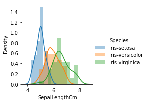
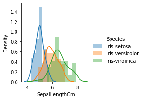

Mengukur jarak
Contents
SOBARIYAH MAGHFIROH
Mengukur jarak#
Ambil dataset StudentsPerformance dari Github
import pandas as pd
import math
data=pd.read_csv('https://raw.githubusercontent.com/Sobariyah1001/dataset/main/StudentsPerformance.csv')
data
| gender | race | parental_level | test_preparation_course | math_score | reading_score | writing_score | |
|---|---|---|---|---|---|---|---|
| 0 | female | group B | bachelor's degree | none | 72 | 72 | 74 |
| 1 | female | group C | some college | completed | 69 | 90 | 88 |
| 2 | female | group B | master's degree | none | 90 | 95 | 93 |
| 3 | male | group A | associate's degree | none | 47 | 57 | 44 |
| 4 | male | group C | some college | none | 76 | 78 | 75 |
| ... | ... | ... | ... | ... | ... | ... | ... |
| 995 | female | group E | master's degree | completed | 88 | 99 | 95 |
| 996 | male | group C | high school | none | 62 | 55 | 55 |
| 997 | female | group C | high school | completed | 59 | 71 | 65 |
| 998 | female | group D | some college | completed | 68 | 78 | 77 |
| 999 | female | group D | some college | none | 77 | 86 | 86 |
1000 rows × 7 columns
Binary adalah jenia atribut yang hanya menyediakan nilai boolean, yang berisi 2 kemungkinan mutlak, seperti 0 dan 1, benar atau salah, ya atau tidak. Nilai boolean false menyatakan tidak adanya fitur tertentu, sedangkan nilai boolean true menyatakan adanya fitur tertentu. Contoh: jenis kelamin, status hidup
Atribut binary dapat dibagi lagi dalam dua jenis yakni:
Simetris: Kedua nilai sama derajat gunanya (misal: gender: laki-laki & perempuan).
Asimetris: Kedua nilai tidak sama derajat gunanya (misal: hasil: lulus & gagal). Operasi yang dapat dilakukan distinctness.
#Menampilkan data biner dari dataset iris
data[["gender","test_preparation_course"]].head()
| gender | test_preparation_course | |
|---|---|---|
| 0 | female | none |
| 1 | female | completed |
| 2 | female | none |
| 3 | male | none |
| 4 | male | none |
#code gendernya
pria = "male"
prem = "female"
lulus = "completed"
tdk_lulus = "none"
#nilai konversi biner
value_of_one = 1
value_of_zero = 0
def change_biner(gender):
return value_of_one if gender == pria else value_of_zero
def change_binertes(test_preparation_course):
return value_of_one if test_preparation_course == lulus else value_of_zero
Update Data gender dan test_preparation ke Biner
#Update Nilai dari Gender dan Test Preparation
data['gender'] = data['gender'].apply(change_biner)
data['test_preparation_course']= data['test_preparation_course'].apply(change_binertes)
data[["gender","test_preparation_course"]].head()
| gender | test_preparation_course | |
|---|---|---|
| 0 | 0 | 0 |
| 1 | 0 | 1 |
| 2 | 0 | 0 |
| 3 | 1 | 0 |
| 4 | 1 | 0 |
* r: i=1, j=0
* s: i=0, j=1
* q: i=1, j=1
* t: i=0, j=0
def binersimetris(i,j):
q=r=s=t=0
for col in ['gender','test_preparation_course']:
if data[col][i]==1 and data[col][j] == 1:
q+=1
print("nilai q =",q)
elif data[col][i]==1 and data[col][j]==0:
r+=1
print("nilai r =",r)
elif data[col][i]==0 and data[col][j] == 1:
s+=1
print("nilai s =",s)
else :
t+=1
print("nilai t =",t)
print("Rumus = (r+s)/(q+r+s+t)")
return (r+s)/(q+r+s+t)
print("Nilai Biner = ", binersimetris(1,3))
nilai s = 1
nilai r = 1
Rumus = (r+s)/(q+r+s+t)
Nilai Biner = 1.0
Nominal Nominal adalah jenis atribut yang hanya menyediakan nilai yang cukup untuk membedakan antara satu objek dengan objek lainnya. Nilai dari atribut nominal adalah nama benda atau dapat juga berupa simbol. Jenis atribut ini hanya bisa dilakukan operasi membandingkan sama atau tidaknya suatu data.
Contoh : nama orang, alamat, nomor ktp, kode pos, warna mata dan lain-lain.
Operasi yang bisa dilakukan adalah distinctness.
data[["race","parental_level"]].head()
| race | parental_level | |
|---|---|---|
| 0 | group B | bachelor's degree |
| 1 | group C | some college |
| 2 | group B | master's degree |
| 3 | group A | associate's degree |
| 4 | group C | some college |
* m = jumlah data yang dibandingkan
* p = jumlah data sama
def d1(i,j):
P = 4
M = 0
for col in ["race","parental_level"]:
if data[col][i] == data[col][j]:
M += 1
return (P-M)/P
print(d1(1,2))
print(d1(1,3))
print(d1(1,4))
1.0
1.0
0.5
Atribut numerik diwakili oleh bilangan bulat atau bilangan riil. Atribut numerik terdiri dari 2 jenis, yakni interval dan rasio.
Interval: memiliki nilai yang perbedaannya dapat diinterpretasikan, tetapi tidak memiliki titik referensi atau titik nol. Nilai atribut ini dapat ditambah dan dikurangi tetapi tidak dapat dikalikan atau dibagi. Contoh : tanggal kalender (diantara dua tanggal tidak ada tanggal lain), temperatur dalam Celcius atau Fahrenheit. Operasi yang bisa dilakukan adalah distinctness, order & addition.
Rasio: atribut numerikyang memiliki titik referensi atau titik nol tetap. Jika suatu pengukuran berskala rasio, kita dapat mengatakan suatu nilai sebagai kelipatan (atau rasio) dari nilai lain. Nilai-nilai dapat diurutkan, dan kita juga dapat menghitung selisih antara nilai-nilai, dan mean, median, mode, Quantile-range-nya. Contoh : temperatur dalam Kelvin, panjang, waktu, massa dan jumlah. Operasi yang bisa dilakukan adalah semua operasi yang ada.
data[["math_score","reading_score","writing_score"]].head()
| math_score | reading_score | writing_score | |
|---|---|---|---|
| 0 | 72 | 72 | 74 |
| 1 | 69 | 90 | 88 |
| 2 | 90 | 95 | 93 |
| 3 | 47 | 57 | 44 |
| 4 | 76 | 78 | 75 |
Standar Deviasi
#normalisasi math score
std1 = 15.16308
mean1 = 66.08900
for col1 in ['math_score']:
data1 = data[col1]
hasil1 = (data1-mean1)/std1
print(hasil1)
#normalisasi reading_score
std2 = 14.600192
mean2 = 68.054000
for col2 in ['reading_score']:
data2 = data[col2]
hasil2 = (data2-mean2)/std2
print(hasil2)
#normalisasi writing_score
std3 = 15.195657
mean3 = 68.054000
for col3 in ['writing_score']:
data3 = data[col3]
hasil3 = (data3-mean3)/std3
print(hasil3)
0 0.389828
1 0.191979
2 1.576922
3 -1.258913
4 0.653627
...
995 1.445023
996 -0.269668
997 -0.467517
998 0.126030
999 0.719577
Name: math_score, Length: 1000, dtype: float64
0 0.270270
1 1.503131
2 1.845592
3 -0.757113
4 0.681224
...
995 2.119561
996 -0.894098
997 0.201778
998 0.681224
999 1.229162
Name: reading_score, Length: 1000, dtype: float64
0 0.391296
1 1.312612
2 1.641653
3 -1.582952
4 0.457104
...
995 1.773270
996 -0.859061
997 -0.200978
998 0.588721
999 1.180995
Name: writing_score, Length: 1000, dtype: float64
def d2(x,y,h):
result = 0
for col in [hasil1, hasil2, hasil3]:
result = math.pow(abs(col[x] - col[y]), h)
return result**(1/h)
print(d2(1,2,2))
print(d2(1,3,2))
print(d2(1,4,2))
0.32904138333735755
2.895564173368746
0.8555075966771294
# Jarak d(1,2)
print("Jarak d(1,2) = ",d1(1,2)+d2(1,2,2)+binersimetris(1,2))
# Jarak d(1,3)
print("Jarak d(1,3) = ",d1(1,3)+d2(1,3,2)+binersimetris(1,3))
# Jarak d(1,4)
print("Jarak d(1,4) = ",d1(1,4)+d2(1,4,2)+binersimetris(1,4))
nilai t = 1
nilai r = 1
Rumus = (r+s)/(q+r+s+t)
Jarak d(1,2) = 1.8290413833373576
nilai s = 1
nilai r = 1
Rumus = (r+s)/(q+r+s+t)
Jarak d(1,3) = 4.895564173368745
nilai s = 1
nilai r = 1
Rumus = (r+s)/(q+r+s+t)
Jarak d(1,4) = 2.3555075966771293
Diskritisasi#
import pandas as pd
import math
#mendekla
p=pd.read_csv('https://raw.githubusercontent.com/Sobariyah1001/dataset/main/Iris.csv')
p
| Id | SepalLengthCm | SepalWidthCm | PetalLengthCm | PetalWidthCm | Species | |
|---|---|---|---|---|---|---|
| 0 | 1 | 5.1 | 3.5 | 1.4 | 0.2 | Iris-setosa |
| 1 | 2 | 4.9 | 3.0 | 1.4 | 0.2 | Iris-setosa |
| 2 | 3 | 4.7 | 3.2 | 1.3 | 0.2 | Iris-setosa |
| 3 | 4 | 4.6 | 3.1 | 1.5 | 0.2 | Iris-setosa |
| 4 | 5 | 5.0 | 3.6 | 1.4 | 0.2 | Iris-setosa |
| ... | ... | ... | ... | ... | ... | ... |
| 145 | 146 | 6.7 | 3.0 | 5.2 | 2.3 | Iris-virginica |
| 146 | 147 | 6.3 | 2.5 | 5.0 | 1.9 | Iris-virginica |
| 147 | 148 | 6.5 | 3.0 | 5.2 | 2.0 | Iris-virginica |
| 148 | 149 | 6.2 | 3.4 | 5.4 | 2.3 | Iris-virginica |
| 149 | 150 | 5.9 | 3.0 | 5.1 | 1.8 | Iris-virginica |
150 rows × 6 columns
Cari data dengan nilai maksimum dan minimum
\(Rumus:\)
\(𝑊=\frac{a-b}{n}\)
\(𝑉1=b+(1*𝑊)\) *\(𝑉2=b+(2*𝑊)\) *………. *…….
\(Keterangan:\)
\(a=Maksimum\)
\(b=Minimum\)
\(n=JumlahPengelompokan\)
a=max(p["SepalLengthCm"])
b=min(p["SepalLengthCm"])
print("Nilai Max = ",a)
print("Nilai Max = ",b)
w=(a-b)/4
print("Nilai W = ", w)
v1=b+(1*w)
print("Nilai V1 = ",v1)
v2=b+(2*w)
print("Nilai V2 = ",v2)
v3=b+(3*w)
print("Nilai V3 = ",v3)
v4=b+(4*w)
print("Nilai V4 = ",v4)
Nilai Max = 7.9
Nilai Max = 4.3
Nilai W = 0.9000000000000001
Nilai V1 = 5.2
Nilai V2 = 6.1
Nilai V3 = 7.0
Nilai V4 = 7.9
x=max(p["SepalWidthCm"])
y=min(p["SepalWidthCm"])
print("Nilai Max = ",y)
print("Nilai Max = ",x)
w2=(x-y)/4
print("Nilai W2 = ", w2)
v5=y+(1*w2)
print("Nilai V1 = ",v5)
v6=y+(2*w2)
print("Nilai V2 = ",v6)
v7=y+(3*w2)
print("Nilai V3 = ",v7)
v8=y+(4*w2)
print("Nilai V4 = ",v8)
Nilai Max = 2.0
Nilai Max = 4.4
Nilai W2 = 0.6000000000000001
Nilai V1 = 2.6
Nilai V2 = 3.2
Nilai V3 = 3.8000000000000003
Nilai V4 = 4.4
m=max(p["PetalLengthCm"])
n=min(p["PetalLengthCm"])
print("Nilai Max = ",m)
print("Nilai Min = ",n)
w3=(m-n)/4
print("Nilai w3 = ", w3)
v9=n+(1*w3)
print("Nilai v9 = ",v9)
v10=n+(2*w3)
print("Nilai V10 = ",v10)
v11=n+(3*w3)
print("Nilai V11 = ",v11)
v12=n+(4*w3)
print("Nilai V12 = ",v12)
Nilai Max = 6.9
Nilai Min = 1.0
Nilai w3 = 1.475
Nilai v9 = 2.475
Nilai V10 = 3.95
Nilai V11 = 5.425000000000001
Nilai V12 = 6.9
r=max(p["PetalWidthCm"])
s=min(p["PetalWidthCm"])
print("Nilai Max = ",r)
print("Nilai Min = ",s)
w4=(r-s)/4
print("Nilai w4 = ", w4)
v13=s+(1*w4)
print("Nilai v13 = ",v13)
v14=s+(2*w4)
print("Nilai V14 = ",v14)
v15=s+(3*w4)
print("Nilai V15 = ",v15)
v16=s+(4*w4)
print("Nilai V16 = ",v16)
Nilai Max = 2.5
Nilai Min = 0.1
Nilai w4 = 0.6
Nilai v13 = 0.7
Nilai V14 = 1.3
Nilai V15 = 1.9
Nilai V16 = 2.5
for i in range(0,150,1):
if p.loc[i]['SepalLengthCm'] > b and p.loc[i]['SepalLengthCm'] < v1:
p['SepalLengthCm'][i] = "A"
elif p.loc[i]['SepalLengthCm'] > v1 and p.loc[i]['SepalLengthCm'] < v2:
p['SepalLengthCm'][i] = "B"
elif p.loc[i]['SepalLengthCm'] > v2 and p.loc[i]['SepalLengthCm'] < v3:
p['SepalLengthCm'][i] = "C"
else:
p['SepalLengthCm'][i] = "D"
<ipython-input-20-314fff0bb75a>:3: SettingWithCopyWarning:
A value is trying to be set on a copy of a slice from a DataFrame
See the caveats in the documentation: https://pandas.pydata.org/pandas-docs/stable/user_guide/indexing.html#returning-a-view-versus-a-copy
p['SepalLengthCm'][i] = "A"
/usr/local/lib/python3.8/dist-packages/pandas/core/indexing.py:1732: SettingWithCopyWarning:
A value is trying to be set on a copy of a slice from a DataFrame
See the caveats in the documentation: https://pandas.pydata.org/pandas-docs/stable/user_guide/indexing.html#returning-a-view-versus-a-copy
self._setitem_single_block(indexer, value, name)
<ipython-input-20-314fff0bb75a>:5: SettingWithCopyWarning:
A value is trying to be set on a copy of a slice from a DataFrame
See the caveats in the documentation: https://pandas.pydata.org/pandas-docs/stable/user_guide/indexing.html#returning-a-view-versus-a-copy
p['SepalLengthCm'][i] = "B"
<ipython-input-20-314fff0bb75a>:9: SettingWithCopyWarning:
A value is trying to be set on a copy of a slice from a DataFrame
See the caveats in the documentation: https://pandas.pydata.org/pandas-docs/stable/user_guide/indexing.html#returning-a-view-versus-a-copy
p['SepalLengthCm'][i] = "D"
<ipython-input-20-314fff0bb75a>:7: SettingWithCopyWarning:
A value is trying to be set on a copy of a slice from a DataFrame
See the caveats in the documentation: https://pandas.pydata.org/pandas-docs/stable/user_guide/indexing.html#returning-a-view-versus-a-copy
p['SepalLengthCm'][i] = "C"
for i in range(0,150,1):
if p.loc[i]['SepalWidthCm'] > y and p.loc[i]['SepalWidthCm'] < v5:
p['SepalWidthCm'][i] = "A"
elif p.loc[i]['SepalWidthCm'] > v5 and p.loc[i]['SepalWidthCm'] < v6:
p['SepalWidthCm'][i] = "B"
elif p.loc[i]['SepalWidthCm'] > v6 and p.loc[i]['SepalWidthCm'] < v7:
p['SepalWidthCm'][i] = "C"
else:
p['SepalWidthCm'][i] = "D"
<ipython-input-21-29139f566cd1>:7: SettingWithCopyWarning:
A value is trying to be set on a copy of a slice from a DataFrame
See the caveats in the documentation: https://pandas.pydata.org/pandas-docs/stable/user_guide/indexing.html#returning-a-view-versus-a-copy
p['SepalWidthCm'][i] = "C"
<ipython-input-21-29139f566cd1>:5: SettingWithCopyWarning:
A value is trying to be set on a copy of a slice from a DataFrame
See the caveats in the documentation: https://pandas.pydata.org/pandas-docs/stable/user_guide/indexing.html#returning-a-view-versus-a-copy
p['SepalWidthCm'][i] = "B"
<ipython-input-21-29139f566cd1>:9: SettingWithCopyWarning:
A value is trying to be set on a copy of a slice from a DataFrame
See the caveats in the documentation: https://pandas.pydata.org/pandas-docs/stable/user_guide/indexing.html#returning-a-view-versus-a-copy
p['SepalWidthCm'][i] = "D"
<ipython-input-21-29139f566cd1>:3: SettingWithCopyWarning:
A value is trying to be set on a copy of a slice from a DataFrame
See the caveats in the documentation: https://pandas.pydata.org/pandas-docs/stable/user_guide/indexing.html#returning-a-view-versus-a-copy
p['SepalWidthCm'][i] = "A"
for i in range(0,150,1):
if p.loc[i]['PetalLengthCm'] > n and p.loc[i]['PetalLengthCm'] < v9:
p['PetalLengthCm'][i] = "A"
elif p.loc[i]['PetalLengthCm'] > v9 and p.loc[i]['PetalLengthCm'] < v10:
p['PetalLengthCm'][i] = "B"
elif p.loc[i]['PetalLengthCm'] > v10 and p.loc[i]['PetalLengthCm'] < v11:
p['PetalLengthCm'][i] = "C"
else:
p['PetalLengthCm'][i] = "D"
<ipython-input-22-56d19f45d61a>:3: SettingWithCopyWarning:
A value is trying to be set on a copy of a slice from a DataFrame
See the caveats in the documentation: https://pandas.pydata.org/pandas-docs/stable/user_guide/indexing.html#returning-a-view-versus-a-copy
p['PetalLengthCm'][i] = "A"
<ipython-input-22-56d19f45d61a>:9: SettingWithCopyWarning:
A value is trying to be set on a copy of a slice from a DataFrame
See the caveats in the documentation: https://pandas.pydata.org/pandas-docs/stable/user_guide/indexing.html#returning-a-view-versus-a-copy
p['PetalLengthCm'][i] = "D"
<ipython-input-22-56d19f45d61a>:7: SettingWithCopyWarning:
A value is trying to be set on a copy of a slice from a DataFrame
See the caveats in the documentation: https://pandas.pydata.org/pandas-docs/stable/user_guide/indexing.html#returning-a-view-versus-a-copy
p['PetalLengthCm'][i] = "C"
<ipython-input-22-56d19f45d61a>:5: SettingWithCopyWarning:
A value is trying to be set on a copy of a slice from a DataFrame
See the caveats in the documentation: https://pandas.pydata.org/pandas-docs/stable/user_guide/indexing.html#returning-a-view-versus-a-copy
p['PetalLengthCm'][i] = "B"
for i in range(0,150,1):
if p.loc[i]['PetalWidthCm'] > s and p.loc[i]['PetalWidthCm'] < v13:
p['PetalWidthCm'][i] = "A"
elif p.loc[i]['PetalWidthCm'] > v13 and p.loc[i]['PetalWidthCm'] < v14:
p['PetalWidthCm'][i] = "B"
elif p.loc[i]['PetalWidthCm'] > v14 and p.loc[i]['PetalWidthCm'] < v15:
p['PetalWidthCm'][i] = "C"
else:
p['PetalWidthCm'][i] = "D"
<ipython-input-23-c52b8441270a>:3: SettingWithCopyWarning:
A value is trying to be set on a copy of a slice from a DataFrame
See the caveats in the documentation: https://pandas.pydata.org/pandas-docs/stable/user_guide/indexing.html#returning-a-view-versus-a-copy
p['PetalWidthCm'][i] = "A"
<ipython-input-23-c52b8441270a>:9: SettingWithCopyWarning:
A value is trying to be set on a copy of a slice from a DataFrame
See the caveats in the documentation: https://pandas.pydata.org/pandas-docs/stable/user_guide/indexing.html#returning-a-view-versus-a-copy
p['PetalWidthCm'][i] = "D"
<ipython-input-23-c52b8441270a>:7: SettingWithCopyWarning:
A value is trying to be set on a copy of a slice from a DataFrame
See the caveats in the documentation: https://pandas.pydata.org/pandas-docs/stable/user_guide/indexing.html#returning-a-view-versus-a-copy
p['PetalWidthCm'][i] = "C"
<ipython-input-23-c52b8441270a>:5: SettingWithCopyWarning:
A value is trying to be set on a copy of a slice from a DataFrame
See the caveats in the documentation: https://pandas.pydata.org/pandas-docs/stable/user_guide/indexing.html#returning-a-view-versus-a-copy
p['PetalWidthCm'][i] = "B"
p
| Id | SepalLengthCm | SepalWidthCm | PetalLengthCm | PetalWidthCm | Species | |
|---|---|---|---|---|---|---|
| 0 | 1 | A | C | A | A | Iris-setosa |
| 1 | 2 | A | B | A | A | Iris-setosa |
| 2 | 3 | A | D | A | A | Iris-setosa |
| 3 | 4 | A | B | A | A | Iris-setosa |
| 4 | 5 | A | C | A | A | Iris-setosa |
| ... | ... | ... | ... | ... | ... | ... |
| 145 | 146 | C | B | C | D | Iris-virginica |
| 146 | 147 | C | A | C | D | Iris-virginica |
| 147 | 148 | C | B | C | D | Iris-virginica |
| 148 | 149 | C | C | C | D | Iris-virginica |
| 149 | 150 | B | B | C | C | Iris-virginica |
150 rows × 6 columns
# drive.mount('/content/drive', force_remount= True)
# ds.to_csv("/content/drive/MyDrive/datamining/irisdiskritasinew.csv", index=False)
Naive Bayes#
Naive Bayes
\(Rumus:\) $\(P(xⅈ|𝑦ⅈ)=\frac{1}{\sqrt2πδ^2}^e-\frac{(xi.μj)^2}{2δ^2j}\)$
\(Example:\)
P(x | Setosa) = cari semua standar deviasinya dan kalikan semua standar deviasinya
P(Setosa) = Jumlah setosa dibagi jumlah data (\(\frac{50}{100}\))
P= P(x | setosa) * P(Setosa)
#import load_
from sklearn.datasets import load_iris
iris=load_iris()
type(iris)
sklearn.utils.Bunch
X=iris.data
y=iris.target
print(iris.feature_names)
['sepal length (cm)', 'sepal width (cm)', 'petal length (cm)', 'petal width (cm)']
print(iris.target)
[0 0 0 0 0 0 0 0 0 0 0 0 0 0 0 0 0 0 0 0 0 0 0 0 0 0 0 0 0 0 0 0 0 0 0 0 0
0 0 0 0 0 0 0 0 0 0 0 0 0 1 1 1 1 1 1 1 1 1 1 1 1 1 1 1 1 1 1 1 1 1 1 1 1
1 1 1 1 1 1 1 1 1 1 1 1 1 1 1 1 1 1 1 1 1 1 1 1 1 1 2 2 2 2 2 2 2 2 2 2 2
2 2 2 2 2 2 2 2 2 2 2 2 2 2 2 2 2 2 2 2 2 2 2 2 2 2 2 2 2 2 2 2 2 2 2 2 2
2 2]
print(iris.target_names)
['setosa' 'versicolor' 'virginica']
print(type(iris.data))
print(type(iris.target))
<class 'numpy.ndarray'>
<class 'numpy.ndarray'>
print(iris.data.shape)
(150, 4)
step 2
from sklearn.model_selection import train_test_split
X_train,X_test,y_train,y_test = train_test_split(X,y,test_size=0.2,random_state=4)
print(X_train.shape)
print(X_test.shape)
(120, 4)
(30, 4)
print(y_train.shape)
print(y_test.shape)
(120,)
(30,)
#import the KNeighborsClassifier class from sklearn
from sklearn.neighbors import KNeighborsClassifier
#import metrics model to check the accuracy
from sklearn import metrics
#Try running from k=1 through 25 and record testing accuracy
k_range = range(1,26)
scores = {}
scores_list = []
for k in k_range:
knn = KNeighborsClassifier(n_neighbors=k)
knn.fit(X_train,y_train)
y_pred=knn.predict(X_test)
scores[k] = metrics.accuracy_score(y_test,y_pred)
scores_list.append(metrics.accuracy_score(y_test,y_pred))
#Testing accuracy for each value of K
scores
{1: 0.9333333333333333,
2: 0.9333333333333333,
3: 0.9666666666666667,
4: 0.9666666666666667,
5: 0.9666666666666667,
6: 0.9666666666666667,
7: 0.9666666666666667,
8: 0.9666666666666667,
9: 0.9666666666666667,
10: 0.9666666666666667,
11: 0.9666666666666667,
12: 0.9666666666666667,
13: 0.9666666666666667,
14: 0.9666666666666667,
15: 0.9666666666666667,
16: 0.9666666666666667,
17: 0.9666666666666667,
18: 0.9666666666666667,
19: 0.9666666666666667,
20: 0.9333333333333333,
21: 0.9666666666666667,
22: 0.9333333333333333,
23: 0.9666666666666667,
24: 0.9666666666666667,
25: 0.9666666666666667}
%matplotlib inline
import matplotlib.pyplot as plt
#plot the relationship between K and the testing accuracy
plt.plot(k_range,scores_list)
plt.xlabel('Value of K for KNN')
plt.ylabel('Testing Accuracy')
Text(0, 0.5, 'Testing Accuracy')

knn = KNeighborsClassifier(n_neighbors=5)
knn.fit(X,y)
KNeighborsClassifier()
#0 = setosa, 1=versicolor, 2=virginica
classes = {0:'setosa',1:'versicolor',2:'virginica'}
#Making prediction on some unseen data
#predict for the below two random observations
x_new = [[3,4,5,2],
[5,4,2,2]]
y_predict = knn.predict(x_new)
print(classes[y_predict[0]])
print(classes[y_predict[1]])
versicolor
setosa
Naive Bayes
, GaussianNB
from sklearn.datasets import load_iris
from sklearn.model_selection import train_test_split
from sklearn.naive_bayes import GaussianNB
X, y = load_iris(return_X_y=True)
X_train, X_test, y_train, y_test = train_test_split(X, y, test_size=0.5, random_state=0)
gnb = GaussianNB()
y_pred = gnb.fit(X_train, y_train).predict(X_test)
print("Number of mislabeled points out of a total %d points : %d"
%(X_test.shape[0], (y_test != y_pred).sum()) )
Number of mislabeled points out of a total 75 points : 4
# Naive Bayes Classification
# Importing the libraries
import numpy as np
import matplotlib.pyplot as plt
import matplotlib.image as mpimg
import pandas as pd
# Importing the dataset
dataset = pd.read_csv('https://raw.githubusercontent.com/Sobariyah1001/dataset/main/Iris.csv')
#looking at the first 5 values of the dataset
dataset.head()
| Id | SepalLengthCm | SepalWidthCm | PetalLengthCm | PetalWidthCm | Species | |
|---|---|---|---|---|---|---|
| 0 | 1 | 5.1 | 3.5 | 1.4 | 0.2 | Iris-setosa |
| 1 | 2 | 4.9 | 3.0 | 1.4 | 0.2 | Iris-setosa |
| 2 | 3 | 4.7 | 3.2 | 1.3 | 0.2 | Iris-setosa |
| 3 | 4 | 4.6 | 3.1 | 1.5 | 0.2 | Iris-setosa |
| 4 | 5 | 5.0 | 3.6 | 1.4 | 0.2 | Iris-setosa |
%matplotlib inline
img=mpimg.imread('iris_types.jpg')
plt.figure(figsize=(20,40))
plt.axis('off')
plt.imshow(img)
FileNotFoundErrorTraceback (most recent call last)
<ipython-input-47-add9c9edfe13> in <module>
1 get_ipython().run_line_magic('matplotlib', 'inline')
----> 2 img=mpimg.imread('iris_types.jpg')
3 plt.figure(figsize=(20,40))
4 plt.axis('off')
5 plt.imshow(img)
/usr/local/lib/python3.8/dist-packages/matplotlib/image.py in imread(fname, format)
1462 raise ValueError('Only know how to handle PNG; with Pillow '
1463 'installed, Matplotlib can handle more images')
-> 1464 with Image.open(fname) as image:
1465 return pil_to_array(image)
1466 from matplotlib import _png
/usr/local/lib/python3.8/dist-packages/PIL/Image.py in open(fp, mode)
2841
2842 if filename:
-> 2843 fp = builtins.open(filename, "rb")
2844 exclusive_fp = True
2845
FileNotFoundError: [Errno 2] No such file or directory: 'iris_types.jpg'
#Spliting the dataset in independent and dependent variables
X = dataset.iloc[:,:4].values
y = dataset['Species'].values
# Splitting the dataset into the Training set and Test set
from sklearn.model_selection import train_test_split
X_train, X_test, y_train, y_test = train_test_split(X, y, test_size = 0.20, random_state = 82)
# Feature Scaling to bring the variable in a single scale
from sklearn.preprocessing import StandardScaler
sc = StandardScaler()
X_train = sc.fit_transform(X_train)
X_test = sc.transform(X_test)
# Fitting Naive Bayes Classification to the Training set with linear kernel
from sklearn.naive_bayes import GaussianNB
nvclassifier = GaussianNB()
nvclassifier.fit(X_train, y_train)
GaussianNB()
# Predicting the Test set results
y_pred = nvclassifier.predict(X_test)
print(y_pred)
['Iris-virginica' 'Iris-virginica' 'Iris-setosa' 'Iris-setosa'
'Iris-setosa' 'Iris-versicolor' 'Iris-versicolor' 'Iris-versicolor'
'Iris-virginica' 'Iris-versicolor' 'Iris-versicolor' 'Iris-virginica'
'Iris-setosa' 'Iris-setosa' 'Iris-setosa' 'Iris-setosa' 'Iris-virginica'
'Iris-versicolor' 'Iris-setosa' 'Iris-versicolor' 'Iris-setosa'
'Iris-virginica' 'Iris-setosa' 'Iris-virginica' 'Iris-virginica'
'Iris-versicolor' 'Iris-virginica' 'Iris-setosa' 'Iris-virginica'
'Iris-versicolor']
#lets see the actual and predicted value side by side
y_compare = np.vstack((y_test,y_pred)).T
#actual value on the left side and predicted value on the right hand side
#printing the top 5 values
y_compare[:5,:]
array([['Iris-virginica', 'Iris-virginica'],
['Iris-virginica', 'Iris-virginica'],
['Iris-setosa', 'Iris-setosa'],
['Iris-setosa', 'Iris-setosa'],
['Iris-setosa', 'Iris-setosa']], dtype=object)
# Making the Confusion Matrix
from sklearn.metrics import confusion_matrix
cm = confusion_matrix(y_test, y_pred)
print(cm)
[[11 0 0]
[ 0 9 0]
[ 0 0 10]]
#finding accuracy from the confusion matrix.
a = cm.shape
corrPred = 0
falsePred = 0
for row in range(a[0]):
for c in range(a[1]):
if row == c:
corrPred +=cm[row,c]
else:
falsePred += cm[row,c]
print('Correct predictions: ', corrPred)
print('False predictions', falsePred)
print ('\n\nAccuracy of the Naive Bayes Clasification is: ', corrPred/(cm.sum()))
Correct predictions: 30
False predictions 0
Accuracy of the Naive Bayes Clasification is: 1.0
K-Means Clustering#
Import Library
import pandas as pd
import numpy as np
import matplotlib.pyplot as plt
import seaborn as sns
from sklearn.cluster import KMeans
from sklearn.metrics import silhouette_score
from sklearn.preprocessing import MinMaxScaler
Import Data Dari Github
iris = pd.read_csv("https://raw.githubusercontent.com/Sobariyah1001/dataset/main/Iris.csv")
x = iris.iloc[:, [0, 1, 2, 3]].values
Menampilkan Data Iris tanpa label
x
array([[ 1. , 5.1, 3.5, 1.4],
[ 2. , 4.9, 3. , 1.4],
[ 3. , 4.7, 3.2, 1.3],
[ 4. , 4.6, 3.1, 1.5],
[ 5. , 5. , 3.6, 1.4],
[ 6. , 5.4, 3.9, 1.7],
[ 7. , 4.6, 3.4, 1.4],
[ 8. , 5. , 3.4, 1.5],
[ 9. , 4.4, 2.9, 1.4],
[ 10. , 4.9, 3.1, 1.5],
[ 11. , 5.4, 3.7, 1.5],
[ 12. , 4.8, 3.4, 1.6],
[ 13. , 4.8, 3. , 1.4],
[ 14. , 4.3, 3. , 1.1],
[ 15. , 5.8, 4. , 1.2],
[ 16. , 5.7, 4.4, 1.5],
[ 17. , 5.4, 3.9, 1.3],
[ 18. , 5.1, 3.5, 1.4],
[ 19. , 5.7, 3.8, 1.7],
[ 20. , 5.1, 3.8, 1.5],
[ 21. , 5.4, 3.4, 1.7],
[ 22. , 5.1, 3.7, 1.5],
[ 23. , 4.6, 3.6, 1. ],
[ 24. , 5.1, 3.3, 1.7],
[ 25. , 4.8, 3.4, 1.9],
[ 26. , 5. , 3. , 1.6],
[ 27. , 5. , 3.4, 1.6],
[ 28. , 5.2, 3.5, 1.5],
[ 29. , 5.2, 3.4, 1.4],
[ 30. , 4.7, 3.2, 1.6],
[ 31. , 4.8, 3.1, 1.6],
[ 32. , 5.4, 3.4, 1.5],
[ 33. , 5.2, 4.1, 1.5],
[ 34. , 5.5, 4.2, 1.4],
[ 35. , 4.9, 3.1, 1.5],
[ 36. , 5. , 3.2, 1.2],
[ 37. , 5.5, 3.5, 1.3],
[ 38. , 4.9, 3.1, 1.5],
[ 39. , 4.4, 3. , 1.3],
[ 40. , 5.1, 3.4, 1.5],
[ 41. , 5. , 3.5, 1.3],
[ 42. , 4.5, 2.3, 1.3],
[ 43. , 4.4, 3.2, 1.3],
[ 44. , 5. , 3.5, 1.6],
[ 45. , 5.1, 3.8, 1.9],
[ 46. , 4.8, 3. , 1.4],
[ 47. , 5.1, 3.8, 1.6],
[ 48. , 4.6, 3.2, 1.4],
[ 49. , 5.3, 3.7, 1.5],
[ 50. , 5. , 3.3, 1.4],
[ 51. , 7. , 3.2, 4.7],
[ 52. , 6.4, 3.2, 4.5],
[ 53. , 6.9, 3.1, 4.9],
[ 54. , 5.5, 2.3, 4. ],
[ 55. , 6.5, 2.8, 4.6],
[ 56. , 5.7, 2.8, 4.5],
[ 57. , 6.3, 3.3, 4.7],
[ 58. , 4.9, 2.4, 3.3],
[ 59. , 6.6, 2.9, 4.6],
[ 60. , 5.2, 2.7, 3.9],
[ 61. , 5. , 2. , 3.5],
[ 62. , 5.9, 3. , 4.2],
[ 63. , 6. , 2.2, 4. ],
[ 64. , 6.1, 2.9, 4.7],
[ 65. , 5.6, 2.9, 3.6],
[ 66. , 6.7, 3.1, 4.4],
[ 67. , 5.6, 3. , 4.5],
[ 68. , 5.8, 2.7, 4.1],
[ 69. , 6.2, 2.2, 4.5],
[ 70. , 5.6, 2.5, 3.9],
[ 71. , 5.9, 3.2, 4.8],
[ 72. , 6.1, 2.8, 4. ],
[ 73. , 6.3, 2.5, 4.9],
[ 74. , 6.1, 2.8, 4.7],
[ 75. , 6.4, 2.9, 4.3],
[ 76. , 6.6, 3. , 4.4],
[ 77. , 6.8, 2.8, 4.8],
[ 78. , 6.7, 3. , 5. ],
[ 79. , 6. , 2.9, 4.5],
[ 80. , 5.7, 2.6, 3.5],
[ 81. , 5.5, 2.4, 3.8],
[ 82. , 5.5, 2.4, 3.7],
[ 83. , 5.8, 2.7, 3.9],
[ 84. , 6. , 2.7, 5.1],
[ 85. , 5.4, 3. , 4.5],
[ 86. , 6. , 3.4, 4.5],
[ 87. , 6.7, 3.1, 4.7],
[ 88. , 6.3, 2.3, 4.4],
[ 89. , 5.6, 3. , 4.1],
[ 90. , 5.5, 2.5, 4. ],
[ 91. , 5.5, 2.6, 4.4],
[ 92. , 6.1, 3. , 4.6],
[ 93. , 5.8, 2.6, 4. ],
[ 94. , 5. , 2.3, 3.3],
[ 95. , 5.6, 2.7, 4.2],
[ 96. , 5.7, 3. , 4.2],
[ 97. , 5.7, 2.9, 4.2],
[ 98. , 6.2, 2.9, 4.3],
[ 99. , 5.1, 2.5, 3. ],
[100. , 5.7, 2.8, 4.1],
[101. , 6.3, 3.3, 6. ],
[102. , 5.8, 2.7, 5.1],
[103. , 7.1, 3. , 5.9],
[104. , 6.3, 2.9, 5.6],
[105. , 6.5, 3. , 5.8],
[106. , 7.6, 3. , 6.6],
[107. , 4.9, 2.5, 4.5],
[108. , 7.3, 2.9, 6.3],
[109. , 6.7, 2.5, 5.8],
[110. , 7.2, 3.6, 6.1],
[111. , 6.5, 3.2, 5.1],
[112. , 6.4, 2.7, 5.3],
[113. , 6.8, 3. , 5.5],
[114. , 5.7, 2.5, 5. ],
[115. , 5.8, 2.8, 5.1],
[116. , 6.4, 3.2, 5.3],
[117. , 6.5, 3. , 5.5],
[118. , 7.7, 3.8, 6.7],
[119. , 7.7, 2.6, 6.9],
[120. , 6. , 2.2, 5. ],
[121. , 6.9, 3.2, 5.7],
[122. , 5.6, 2.8, 4.9],
[123. , 7.7, 2.8, 6.7],
[124. , 6.3, 2.7, 4.9],
[125. , 6.7, 3.3, 5.7],
[126. , 7.2, 3.2, 6. ],
[127. , 6.2, 2.8, 4.8],
[128. , 6.1, 3. , 4.9],
[129. , 6.4, 2.8, 5.6],
[130. , 7.2, 3. , 5.8],
[131. , 7.4, 2.8, 6.1],
[132. , 7.9, 3.8, 6.4],
[133. , 6.4, 2.8, 5.6],
[134. , 6.3, 2.8, 5.1],
[135. , 6.1, 2.6, 5.6],
[136. , 7.7, 3. , 6.1],
[137. , 6.3, 3.4, 5.6],
[138. , 6.4, 3.1, 5.5],
[139. , 6. , 3. , 4.8],
[140. , 6.9, 3.1, 5.4],
[141. , 6.7, 3.1, 5.6],
[142. , 6.9, 3.1, 5.1],
[143. , 5.8, 2.7, 5.1],
[144. , 6.8, 3.2, 5.9],
[145. , 6.7, 3.3, 5.7],
[146. , 6.7, 3. , 5.2],
[147. , 6.3, 2.5, 5. ],
[148. , 6.5, 3. , 5.2],
[149. , 6.2, 3.4, 5.4],
[150. , 5.9, 3. , 5.1]])
iris.info()
iris[0:10]
<class 'pandas.core.frame.DataFrame'>
RangeIndex: 150 entries, 0 to 149
Data columns (total 6 columns):
# Column Non-Null Count Dtype
--- ------ -------------- -----
0 Id 150 non-null int64
1 SepalLengthCm 150 non-null float64
2 SepalWidthCm 150 non-null float64
3 PetalLengthCm 150 non-null float64
4 PetalWidthCm 150 non-null float64
5 Species 150 non-null object
dtypes: float64(4), int64(1), object(1)
memory usage: 7.2+ KB
| Id | SepalLengthCm | SepalWidthCm | PetalLengthCm | PetalWidthCm | Species | |
|---|---|---|---|---|---|---|
| 0 | 1 | 5.1 | 3.5 | 1.4 | 0.2 | Iris-setosa |
| 1 | 2 | 4.9 | 3.0 | 1.4 | 0.2 | Iris-setosa |
| 2 | 3 | 4.7 | 3.2 | 1.3 | 0.2 | Iris-setosa |
| 3 | 4 | 4.6 | 3.1 | 1.5 | 0.2 | Iris-setosa |
| 4 | 5 | 5.0 | 3.6 | 1.4 | 0.2 | Iris-setosa |
| ... | ... | ... | ... | ... | ... | ... |
| 145 | 146 | 6.7 | 3.0 | 5.2 | 2.3 | Iris-virginica |
| 146 | 147 | 6.3 | 2.5 | 5.0 | 1.9 | Iris-virginica |
| 147 | 148 | 6.5 | 3.0 | 5.2 | 2.0 | Iris-virginica |
| 148 | 149 | 6.2 | 3.4 | 5.4 | 2.3 | Iris-virginica |
| 149 | 150 | 5.9 | 3.0 | 5.1 | 1.8 | Iris-virginica |
150 rows × 6 columns
#Frequency distribution of species"
iris_outcome = pd.crosstab(index=iris["Species"], # Make a crosstab
columns="count") # Name the count column
iris_outcome
| col_0 | count |
|---|---|
| Species | |
| Iris-setosa | 50 |
| Iris-versicolor | 50 |
| Iris-virginica | 50 |
iris_setosa=iris.loc[iris["Species"]=="Iris-setosa"]
iris_virginica=iris.loc[iris["Species"]=="Iris-virginica"]
iris_versicolor=iris.loc[iris["Species"]=="Iris-versicolor"]
sns.FacetGrid(iris,hue="Species",size=3).map(sns.distplot,"PetalLengthCm").add_legend()
sns.FacetGrid(iris,hue="Species",size=3).map(sns.distplot,"PetalWidthCm").add_legend()
sns.FacetGrid(iris,hue="Species",size=3).map(sns.distplot,"SepalLengthCm").add_legend()
plt.show()
/usr/local/lib/python3.7/dist-packages/seaborn/axisgrid.py:337: UserWarning: The `size` parameter has been renamed to `height`; please update your code.
warnings.warn(msg, UserWarning)
/usr/local/lib/python3.7/dist-packages/seaborn/distributions.py:2619: FutureWarning: `distplot` is a deprecated function and will be removed in a future version. Please adapt your code to use either `displot` (a figure-level function with similar flexibility) or `histplot` (an axes-level function for histograms).
warnings.warn(msg, FutureWarning)
/usr/local/lib/python3.7/dist-packages/seaborn/distributions.py:2619: FutureWarning: `distplot` is a deprecated function and will be removed in a future version. Please adapt your code to use either `displot` (a figure-level function with similar flexibility) or `histplot` (an axes-level function for histograms).
warnings.warn(msg, FutureWarning)
/usr/local/lib/python3.7/dist-packages/seaborn/distributions.py:2619: FutureWarning: `distplot` is a deprecated function and will be removed in a future version. Please adapt your code to use either `displot` (a figure-level function with similar flexibility) or `histplot` (an axes-level function for histograms).
warnings.warn(msg, FutureWarning)
/usr/local/lib/python3.7/dist-packages/seaborn/axisgrid.py:337: UserWarning: The `size` parameter has been renamed to `height`; please update your code.
warnings.warn(msg, UserWarning)
/usr/local/lib/python3.7/dist-packages/seaborn/distributions.py:2619: FutureWarning: `distplot` is a deprecated function and will be removed in a future version. Please adapt your code to use either `displot` (a figure-level function with similar flexibility) or `histplot` (an axes-level function for histograms).
warnings.warn(msg, FutureWarning)
/usr/local/lib/python3.7/dist-packages/seaborn/distributions.py:2619: FutureWarning: `distplot` is a deprecated function and will be removed in a future version. Please adapt your code to use either `displot` (a figure-level function with similar flexibility) or `histplot` (an axes-level function for histograms).
warnings.warn(msg, FutureWarning)
/usr/local/lib/python3.7/dist-packages/seaborn/distributions.py:2619: FutureWarning: `distplot` is a deprecated function and will be removed in a future version. Please adapt your code to use either `displot` (a figure-level function with similar flexibility) or `histplot` (an axes-level function for histograms).
warnings.warn(msg, FutureWarning)
/usr/local/lib/python3.7/dist-packages/seaborn/axisgrid.py:337: UserWarning: The `size` parameter has been renamed to `height`; please update your code.
warnings.warn(msg, UserWarning)
/usr/local/lib/python3.7/dist-packages/seaborn/distributions.py:2619: FutureWarning: `distplot` is a deprecated function and will be removed in a future version. Please adapt your code to use either `displot` (a figure-level function with similar flexibility) or `histplot` (an axes-level function for histograms).
warnings.warn(msg, FutureWarning)
/usr/local/lib/python3.7/dist-packages/seaborn/distributions.py:2619: FutureWarning: `distplot` is a deprecated function and will be removed in a future version. Please adapt your code to use either `displot` (a figure-level function with similar flexibility) or `histplot` (an axes-level function for histograms).
warnings.warn(msg, FutureWarning)
/usr/local/lib/python3.7/dist-packages/seaborn/distributions.py:2619: FutureWarning: `distplot` is a deprecated function and will be removed in a future version. Please adapt your code to use either `displot` (a figure-level function with similar flexibility) or `histplot` (an axes-level function for histograms).
warnings.warn(msg, FutureWarning)

 

sns.boxplot(x="Species",y="PetalLengthCm",data=iris)
plt.show()
sns.violinplot(x="Species",y="PetalLengthCm",data=iris)
plt.show()

sns.set_style("whitegrid")
sns.pairplot(iris,hue="Species",size=3);
plt.show()
/usr/local/lib/python3.7/dist-packages/seaborn/axisgrid.py:2076: UserWarning: The `size` parameter has been renamed to `height`; please update your code.
warnings.warn(msg, UserWarning)

#Finding the optimum number of clusters for k-means classification
from sklearn.cluster import KMeans
wcss = []
for i in range(1, 11):
kmeans = KMeans(n_clusters = i, init = 'k-means++', max_iter = 300, n_init = 10, random_state = 0)
kmeans.fit(x)
wcss.append(kmeans.inertia_)
wcss
[281831.5446666667,
70581.38080000003,
31320.71120000001,
17758.792503556186,
11468.96874702381,
7921.8634730769245,
5911.632365518541,
4541.979023391813,
3571.9110955882347,
2943.933100840336]
plt.plot(range(1, 11), wcss)
plt.title('The elbow method')
plt.xlabel('Number of clusters')
plt.ylabel('WCSS') #within cluster sum of squares
plt.show()
kmeans = KMeans(n_clusters = 3, init = 'k-means++', max_iter = 300, n_init = 10, random_state = 0)
y_kmeans = kmeans.fit_predict(x)
y_kmeans
array([0, 0, 0, 0, 0, 0, 0, 0, 0, 0, 0, 0, 0, 0, 0, 0, 0, 0, 0, 0, 0, 0,
0, 0, 0, 0, 0, 0, 0, 0, 0, 0, 0, 0, 0, 0, 0, 0, 0, 0, 0, 0, 0, 0,
0, 0, 0, 0, 0, 0, 2, 2, 2, 2, 2, 2, 2, 2, 2, 2, 2, 2, 2, 2, 2, 2,
2, 2, 2, 2, 2, 2, 2, 2, 2, 2, 2, 2, 2, 2, 2, 2, 2, 2, 2, 2, 2, 2,
2, 2, 2, 2, 2, 2, 2, 2, 2, 2, 2, 2, 1, 1, 1, 1, 1, 1, 1, 1, 1, 1,
1, 1, 1, 1, 1, 1, 1, 1, 1, 1, 1, 1, 1, 1, 1, 1, 1, 1, 1, 1, 1, 1,
1, 1, 1, 1, 1, 1, 1, 1, 1, 1, 1, 1, 1, 1, 1, 1, 1, 1], dtype=int32)
from sklearn.decomposition import PCA
pca=PCA(n_components=2)
X_new=pca.fit_transform(x)
X_new
array([[ 7.45410531e+01, 4.08041966e-01],
[ 7.35425448e+01, 2.74103351e-01],
[ 7.25503976e+01, 4.34741494e-02],
[ 7.15449425e+01, 1.25559589e-01],
[ 7.05457903e+01, 2.03177345e-01],
[ 6.95315089e+01, 6.24870481e-01],
[ 6.85519476e+01, -7.78343360e-02],
[ 6.75436439e+01, 1.78388337e-01],
[ 6.65541830e+01, -2.49529805e-01],
[ 6.55453069e+01, 5.56046511e-02],
[ 6.45416017e+01, 2.68973939e-01],
[ 6.35457663e+01, 8.16806801e-03],
[ 6.25520909e+01, -1.93417444e-01],
[ 6.15704157e+01, -7.47745105e-01],
[ 6.05510549e+01, 6.62088619e-02],
[ 5.95439995e+01, 2.25283210e-01],
[ 5.85540250e+01, -1.31246684e-01],
[ 5.75536953e+01, -2.33824559e-01],
[ 5.65366822e+01, 2.92259370e-01],
[ 5.55527889e+01, -2.29065746e-01],
[ 5.45406801e+01, 6.67266979e-02],
[ 5.35538795e+01, -3.02937649e-01],
[ 5.25789754e+01, -1.02601939e+00],
[ 5.15466119e+01, -2.01488248e-01],
[ 5.05446820e+01, -2.27077214e-01],
[ 4.95518589e+01, -4.09469875e-01],
[ 4.85541895e+01, -4.53793956e-01],
[ 4.75561821e+01, -4.73999766e-01],
[ 4.65601130e+01, -5.95312755e-01],
[ 4.55597245e+01, -7.20367095e-01],
[ 4.45587056e+01, -7.04286746e-01],
[ 4.35560283e+01, -5.18994584e-01],
[ 4.25622808e+01, -6.72634877e-01],
[ 4.15629076e+01, -6.40645291e-01],
[ 4.05638983e+01, -8.88316709e-01],
[ 3.95744247e+01, -1.13111380e+00],
[ 3.85659454e+01, -8.27621150e-01],
[ 3.75661293e+01, -1.00158727e+00],
[ 3.65804734e+01, -1.46907519e+00],
[ 3.55660751e+01, -9.77635608e-01],
[ 3.45757493e+01, -1.23962555e+00],
[ 3.35785614e+01, -1.51865771e+00],
[ 3.25842415e+01, -1.62338622e+00],
[ 3.15672284e+01, -1.09730229e+00],
[ 3.05570446e+01, -8.32195340e-01],
[ 2.95766317e+01, -1.43939364e+00],
[ 2.85692837e+01, -1.16330287e+00],
[ 2.75816441e+01, -1.62258175e+00],
[ 2.65712266e+01, -1.21798193e+00],
[ 2.55780648e+01, -1.49095568e+00],
[ 2.44328243e+01, 2.32836927e+00],
[ 2.34489310e+01, 1.80704416e+00],
[ 2.24281128e+01, 2.37269786e+00],
[ 2.14770601e+01, 8.50558430e-01],
[ 2.04446252e+01, 1.83773416e+00],
[ 1.94598797e+01, 1.29721619e+00],
[ 1.84472440e+01, 1.73481856e+00],
[ 1.75137143e+01, -2.11668764e-01],
[ 1.64466307e+01, 1.73726033e+00],
[ 1.54907905e+01, 3.75665947e-01],
[ 1.45058245e+01, -9.57808216e-02],
[ 1.34731552e+01, 9.16188418e-01],
[ 1.24765270e+01, 7.73365528e-01],
[ 1.14535944e+01, 1.37269702e+00],
[ 1.05005907e+01, 1.36785822e-01],
[ 9.45843186e+00, 1.35147825e+00],
[ 8.47021924e+00, 8.26411782e-01],
[ 7.48137677e+00, 5.57179373e-01],
[ 6.46033754e+00, 1.07720490e+00],
[ 5.49197023e+00, 2.10162601e-01],
[ 4.45913793e+00, 1.08428076e+00],
[ 3.48423453e+00, 4.75898396e-01],
[ 2.44880073e+00, 1.31423923e+00],
[ 1.46063421e+00, 9.96770279e-01],
[ 4.72012830e-01, 7.73166040e-01],
[-5.33162435e-01, 9.23356113e-01],
[-1.55027975e+00, 1.33406543e+00],
[-2.55454466e+00, 1.41122545e+00],
[-3.52671701e+00, 5.83752920e-01],
[-4.48722651e+00, -4.57644120e-01],
[-5.49529645e+00, -3.40914329e-01],
[-6.49096885e+00, -4.63869125e-01],
[-7.50030044e+00, -1.79569327e-01],
[-8.54529588e+00, 9.09439912e-01],
[-9.51366319e+00, 4.23976094e-02],
[-1.05195277e+01, 3.11245907e-01],
[-1.15367032e+01, 8.14178130e-01],
[-1.25229181e+01, 3.25180317e-01],
[-1.34990845e+01, -3.45030782e-01],
[-1.44953747e+01, -5.11971942e-01],
[-1.55085701e+01, -2.10578836e-01],
[-1.65216025e+01, 2.28665345e-01],
[-1.74968445e+01, -4.70298123e-01],
[-1.84612766e+01, -1.51707832e+00],
[-1.94993967e+01, -4.81448548e-01],
[-2.04988287e+01, -4.71935425e-01],
[-2.14984817e+01, -5.08050473e-01],
[-2.25081513e+01, -1.99632404e-01],
[-2.34473788e+01, -1.91254463e+00],
[-2.44930636e+01, -7.04877172e-01],
[-2.55666264e+01, 1.18109021e+00],
[-2.65291783e+01, 1.25425740e-01],
[-2.75736722e+01, 1.44286715e+00],
[-2.85516465e+01, 7.33595108e-01],
[-2.95604058e+01, 9.68983123e-01],
[-3.06033581e+01, 2.18695916e+00],
[-3.14924571e+01, -1.04102114e+00],
[-3.25874181e+01, 1.70090725e+00],
[-3.35621465e+01, 9.30555531e-01],
[-3.45746199e+01, 1.39130961e+00],
[-3.55300627e+01, 1.42772791e-01],
[-3.65371047e+01, 2.31425457e-01],
[-3.75478022e+01, 5.67920651e-01],
[-3.85160981e+01, -4.61766238e-01],
[-3.95191140e+01, -3.67055174e-01],
[-4.05321464e+01, 7.21890064e-02],
[-4.15407300e+01, 2.60307045e-01],
[-4.25962101e+01, 1.85813579e+00],
[-4.36073952e+01, 2.01047650e+00],
[-4.45169239e+01, -5.26795756e-01],
[-4.55495932e+01, 4.85173483e-01],
[-4.65040088e+01, -9.06139831e-01],
[-4.75964592e+01, 1.68576959e+00],
[-4.85124792e+01, -6.14643959e-01],
[-4.95434901e+01, 2.28113466e-01],
[-5.05607243e+01, 7.08569225e-01],
[-5.15049017e+01, -8.66949667e-01],
[-5.25055826e+01, -8.74987589e-01],
[-5.35348177e+01, -1.56489050e-01],
[-5.45513753e+01, 3.90429537e-01],
[-5.55649086e+01, 7.15940913e-01],
[-5.65777787e+01, 1.17833680e+00],
[-5.75318430e+01, -3.07516467e-01],
[-5.85118138e+01, -8.23458427e-01],
[-5.95270516e+01, -5.36332752e-01],
[-6.05644944e+01, 6.80459217e-01],
[-6.15251221e+01, -5.20590121e-01],
[-6.25233506e+01, -5.86424101e-01],
[-6.34924526e+01, -1.42770633e+00],
[-6.45251086e+01, -4.86158770e-01],
[-6.55288011e+01, -4.57910533e-01],
[-6.65128694e+01, -8.17266304e-01],
[-6.74986883e+01, -1.42260529e+00],
[-6.85382911e+01, -2.65033682e-01],
[-6.95286170e+01, -5.27023622e-01],
[-7.05111438e+01, -9.85844766e-01],
[-7.14997525e+01, -1.39457006e+00],
[-7.25069247e+01, -1.16574927e+00],
[-7.35076645e+01, -1.19626365e+00],
[-7.44936583e+01, -1.63963330e+00]])
#Visualising the clusters
plt.scatter(x[y_kmeans == 0, 0], x[y_kmeans == 0, 1], s = 100, c = 'purple', label = 'Iris-setosa')
plt.scatter(x[y_kmeans == 1, 0], x[y_kmeans == 1, 1], s = 100, c = 'orange', label = 'Iris-versicolour')
plt.scatter(x[y_kmeans == 2, 0], x[y_kmeans == 2, 1], s = 100, c = 'green', label = 'Iris-virginica')
#Plotting the centroids of the clusters
plt.scatter(kmeans.cluster_centers_[:, 0], kmeans.cluster_centers_[:,1], s = 100, c = 'red', label = 'Centroids')
plt.legend()
<matplotlib.legend.Legend at 0x7fedb312ae90>
# 3d scatterplot using matplotlib
fig = plt.figure(figsize = (15,15))
ax = fig.add_subplot(111, projection='3d')
plt.scatter(x[y_kmeans == 0, 0], x[y_kmeans == 0, 1], s = 100, c = 'purple', label = 'Iris-setosa')
plt.scatter(x[y_kmeans == 1, 0], x[y_kmeans == 1, 1], s = 100, c = 'orange', label = 'Iris-versicolour')
plt.scatter(x[y_kmeans == 2, 0], x[y_kmeans == 2, 1], s = 100, c = 'green', label = 'Iris-virginica')
#Plotting the centroids of the clusters
plt.scatter(kmeans.cluster_centers_[:, 0], kmeans.cluster_centers_[:,1], s = 100, c = 'red', label = 'Centroids')
plt.show()
Decition Tree#
import pandas as pd
import numpy as np
import matplotlib.pyplot as plt
import seaborn as sns
#Reading the Iris.csv file
Iris_data = pd.read_csv('https://raw.githubusercontent.com/Sobariyah1001/dataset/main/Iris.csv')
#Checking top 10 records of Dataset..
Iris_data.head(10)
| Id | SepalLengthCm | SepalWidthCm | PetalLengthCm | PetalWidthCm | Species | |
|---|---|---|---|---|---|---|
| 0 | 1 | 5.1 | 3.5 | 1.4 | 0.2 | Iris-setosa |
| 1 | 2 | 4.9 | 3.0 | 1.4 | 0.2 | Iris-setosa |
| 2 | 3 | 4.7 | 3.2 | 1.3 | 0.2 | Iris-setosa |
| 3 | 4 | 4.6 | 3.1 | 1.5 | 0.2 | Iris-setosa |
| 4 | 5 | 5.0 | 3.6 | 1.4 | 0.2 | Iris-setosa |
| 5 | 6 | 5.4 | 3.9 | 1.7 | 0.4 | Iris-setosa |
| 6 | 7 | 4.6 | 3.4 | 1.4 | 0.3 | Iris-setosa |
| 7 | 8 | 5.0 | 3.4 | 1.5 | 0.2 | Iris-setosa |
| 8 | 9 | 4.4 | 2.9 | 1.4 | 0.2 | Iris-setosa |
| 9 | 10 | 4.9 | 3.1 | 1.5 | 0.1 | Iris-setosa |
#Visualizing the dataset features to find pattern to solve our task
plt.scatter(Iris_data['SepalLengthCm'],Iris_data['SepalWidthCm'])
plt.show()

#Using Seaborn lib to visualized 2 features based on target variable.
sns.set_style('whitegrid')
sns.FacetGrid(Iris_data, hue = 'Species') \
.map(plt.scatter, 'SepalLengthCm','SepalWidthCm') \
.add_legend()
plt.show()

#Pair plot gives the relationship b/w all features distribution with each other..
sns.pairplot(Iris_data.drop(['Id'],axis=1), hue='Species')
plt.show()

#Just trying to explore some new feature using the given data...
Iris_data['Sepal_diff'] = Iris_data['SepalLengthCm']-Iris_data['SepalWidthCm']
Iris_data['petal_diff'] = Iris_data['PetalLengthCm']-Iris_data['PetalWidthCm']
Iris_data
| Id | SepalLengthCm | SepalWidthCm | PetalLengthCm | PetalWidthCm | Species | Sepal_diff | petal_diff | |
|---|---|---|---|---|---|---|---|---|
| 0 | 1 | 5.1 | 3.5 | 1.4 | 0.2 | Iris-setosa | 1.6 | 1.2 |
| 1 | 2 | 4.9 | 3.0 | 1.4 | 0.2 | Iris-setosa | 1.9 | 1.2 |
| 2 | 3 | 4.7 | 3.2 | 1.3 | 0.2 | Iris-setosa | 1.5 | 1.1 |
| 3 | 4 | 4.6 | 3.1 | 1.5 | 0.2 | Iris-setosa | 1.5 | 1.3 |
| 4 | 5 | 5.0 | 3.6 | 1.4 | 0.2 | Iris-setosa | 1.4 | 1.2 |
| ... | ... | ... | ... | ... | ... | ... | ... | ... |
| 145 | 146 | 6.7 | 3.0 | 5.2 | 2.3 | Iris-virginica | 3.7 | 2.9 |
| 146 | 147 | 6.3 | 2.5 | 5.0 | 1.9 | Iris-virginica | 3.8 | 3.1 |
| 147 | 148 | 6.5 | 3.0 | 5.2 | 2.0 | Iris-virginica | 3.5 | 3.2 |
| 148 | 149 | 6.2 | 3.4 | 5.4 | 2.3 | Iris-virginica | 2.8 | 3.1 |
| 149 | 150 | 5.9 | 3.0 | 5.1 | 1.8 | Iris-virginica | 2.9 | 3.3 |
150 rows × 8 columns
#Analysed new feature to get some more infomation apart form existing ones...
sns.set_style('whitegrid')
sns.FacetGrid(Iris_data,hue='Species')\
.map(plt.scatter,'Sepal_diff','petal_diff')\
.add_legend()
plt.show()
sns.set_style('whitegrid')
sns.FacetGrid(Iris_data,hue='Species')\
.map(sns.distplot,'petal_diff')\
.add_legend()
plt.show()

/usr/local/lib/python3.7/dist-packages/seaborn/distributions.py:2619: FutureWarning: `distplot` is a deprecated function and will be removed in a future version. Please adapt your code to use either `displot` (a figure-level function with similar flexibility) or `histplot` (an axes-level function for histograms).
warnings.warn(msg, FutureWarning)
/usr/local/lib/python3.7/dist-packages/seaborn/distributions.py:2619: FutureWarning: `distplot` is a deprecated function and will be removed in a future version. Please adapt your code to use either `displot` (a figure-level function with similar flexibility) or `histplot` (an axes-level function for histograms).
warnings.warn(msg, FutureWarning)
/usr/local/lib/python3.7/dist-packages/seaborn/distributions.py:2619: FutureWarning: `distplot` is a deprecated function and will be removed in a future version. Please adapt your code to use either `displot` (a figure-level function with similar flexibility) or `histplot` (an axes-level function for histograms).
warnings.warn(msg, FutureWarning)

Iris_data['Sepal_petal_len_diff'] = Iris_data['SepalLengthCm']-Iris_data['PetalLengthCm']
Iris_data['Sepal_petal_width_diff'] = Iris_data['SepalWidthCm']-Iris_data['PetalWidthCm']
Iris_data
| Id | SepalLengthCm | SepalWidthCm | PetalLengthCm | PetalWidthCm | Species | Sepal_diff | petal_diff | Sepal_petal_len_diff | Sepal_petal_width_diff | |
|---|---|---|---|---|---|---|---|---|---|---|
| 0 | 1 | 5.1 | 3.5 | 1.4 | 0.2 | Iris-setosa | 1.6 | 1.2 | 3.7 | 3.3 |
| 1 | 2 | 4.9 | 3.0 | 1.4 | 0.2 | Iris-setosa | 1.9 | 1.2 | 3.5 | 2.8 |
| 2 | 3 | 4.7 | 3.2 | 1.3 | 0.2 | Iris-setosa | 1.5 | 1.1 | 3.4 | 3.0 |
| 3 | 4 | 4.6 | 3.1 | 1.5 | 0.2 | Iris-setosa | 1.5 | 1.3 | 3.1 | 2.9 |
| 4 | 5 | 5.0 | 3.6 | 1.4 | 0.2 | Iris-setosa | 1.4 | 1.2 | 3.6 | 3.4 |
| ... | ... | ... | ... | ... | ... | ... | ... | ... | ... | ... |
| 145 | 146 | 6.7 | 3.0 | 5.2 | 2.3 | Iris-virginica | 3.7 | 2.9 | 1.5 | 0.7 |
| 146 | 147 | 6.3 | 2.5 | 5.0 | 1.9 | Iris-virginica | 3.8 | 3.1 | 1.3 | 0.6 |
| 147 | 148 | 6.5 | 3.0 | 5.2 | 2.0 | Iris-virginica | 3.5 | 3.2 | 1.3 | 1.0 |
| 148 | 149 | 6.2 | 3.4 | 5.4 | 2.3 | Iris-virginica | 2.8 | 3.1 | 0.8 | 1.1 |
| 149 | 150 | 5.9 | 3.0 | 5.1 | 1.8 | Iris-virginica | 2.9 | 3.3 | 0.8 | 1.2 |
150 rows × 10 columns
sns.set_style('whitegrid')
sns.FacetGrid(Iris_data,hue='Species')\
.map(plt.scatter,'Sepal_petal_len_diff','Sepal_petal_width_diff')\
.add_legend()
plt.show()
sns.set_style('whitegrid')
sns.FacetGrid(Iris_data,hue='Species')\
.map(sns.distplot,'PetalLengthCm')\
.add_legend()
plt.show()

/usr/local/lib/python3.7/dist-packages/seaborn/distributions.py:2619: FutureWarning: `distplot` is a deprecated function and will be removed in a future version. Please adapt your code to use either `displot` (a figure-level function with similar flexibility) or `histplot` (an axes-level function for histograms).
warnings.warn(msg, FutureWarning)
/usr/local/lib/python3.7/dist-packages/seaborn/distributions.py:2619: FutureWarning: `distplot` is a deprecated function and will be removed in a future version. Please adapt your code to use either `displot` (a figure-level function with similar flexibility) or `histplot` (an axes-level function for histograms).
warnings.warn(msg, FutureWarning)
/usr/local/lib/python3.7/dist-packages/seaborn/distributions.py:2619: FutureWarning: `distplot` is a deprecated function and will be removed in a future version. Please adapt your code to use either `displot` (a figure-level function with similar flexibility) or `histplot` (an axes-level function for histograms).
warnings.warn(msg, FutureWarning)

Iris_data['Sepal_petal_len_wid_diff'] = Iris_data['SepalLengthCm']-Iris_data['PetalWidthCm']
Iris_data['Sepal_petal_wid_len_diff'] = Iris_data['SepalWidthCm']-Iris_data['PetalLengthCm']
Iris_data
| Id | SepalLengthCm | SepalWidthCm | PetalLengthCm | PetalWidthCm | Species | Sepal_diff | petal_diff | Sepal_petal_len_diff | Sepal_petal_width_diff | Sepal_petal_len_wid_diff | Sepal_petal_wid_len_diff | |
|---|---|---|---|---|---|---|---|---|---|---|---|---|
| 0 | 1 | 5.1 | 3.5 | 1.4 | 0.2 | Iris-setosa | 1.6 | 1.2 | 3.7 | 3.3 | 4.9 | 2.1 |
| 1 | 2 | 4.9 | 3.0 | 1.4 | 0.2 | Iris-setosa | 1.9 | 1.2 | 3.5 | 2.8 | 4.7 | 1.6 |
| 2 | 3 | 4.7 | 3.2 | 1.3 | 0.2 | Iris-setosa | 1.5 | 1.1 | 3.4 | 3.0 | 4.5 | 1.9 |
| 3 | 4 | 4.6 | 3.1 | 1.5 | 0.2 | Iris-setosa | 1.5 | 1.3 | 3.1 | 2.9 | 4.4 | 1.6 |
| 4 | 5 | 5.0 | 3.6 | 1.4 | 0.2 | Iris-setosa | 1.4 | 1.2 | 3.6 | 3.4 | 4.8 | 2.2 |
| ... | ... | ... | ... | ... | ... | ... | ... | ... | ... | ... | ... | ... |
| 145 | 146 | 6.7 | 3.0 | 5.2 | 2.3 | Iris-virginica | 3.7 | 2.9 | 1.5 | 0.7 | 4.4 | -2.2 |
| 146 | 147 | 6.3 | 2.5 | 5.0 | 1.9 | Iris-virginica | 3.8 | 3.1 | 1.3 | 0.6 | 4.4 | -2.5 |
| 147 | 148 | 6.5 | 3.0 | 5.2 | 2.0 | Iris-virginica | 3.5 | 3.2 | 1.3 | 1.0 | 4.5 | -2.2 |
| 148 | 149 | 6.2 | 3.4 | 5.4 | 2.3 | Iris-virginica | 2.8 | 3.1 | 0.8 | 1.1 | 3.9 | -2.0 |
| 149 | 150 | 5.9 | 3.0 | 5.1 | 1.8 | Iris-virginica | 2.9 | 3.3 | 0.8 | 1.2 | 4.1 | -2.1 |
150 rows × 12 columns
sns.set_style('whitegrid')
sns.FacetGrid(Iris_data,hue='Species')\
.map(plt.scatter,'Sepal_petal_wid_len_diff','Sepal_petal_len_wid_diff')\
.add_legend()
plt.show()
sns.set_style('whitegrid')
sns.FacetGrid(Iris_data,hue='Species')\
.map(sns.distplot,'Sepal_petal_wid_len_diff')\
.add_legend()
plt.show()
/usr/local/lib/python3.7/dist-packages/seaborn/distributions.py:2619: FutureWarning: `distplot` is a deprecated function and will be removed in a future version. Please adapt your code to use either `displot` (a figure-level function with similar flexibility) or `histplot` (an axes-level function for histograms).
warnings.warn(msg, FutureWarning)
/usr/local/lib/python3.7/dist-packages/seaborn/distributions.py:2619: FutureWarning: `distplot` is a deprecated function and will be removed in a future version. Please adapt your code to use either `displot` (a figure-level function with similar flexibility) or `histplot` (an axes-level function for histograms).
warnings.warn(msg, FutureWarning)
/usr/local/lib/python3.7/dist-packages/seaborn/distributions.py:2619: FutureWarning: `distplot` is a deprecated function and will be removed in a future version. Please adapt your code to use either `displot` (a figure-level function with similar flexibility) or `histplot` (an axes-level function for histograms).
warnings.warn(msg, FutureWarning)
# Finding relationship b/w new feature based on class labels...
sns.pairplot(Iris_data[['Species', 'Sepal_diff', 'petal_diff', 'Sepal_petal_len_diff',\
'Sepal_petal_width_diff', 'Sepal_petal_len_wid_diff',\
'Sepal_petal_wid_len_diff']], hue='Species')
plt.show()

#Droping Id column as it is of no use in classifing the class labels..
Iris_data.drop(['Id'],axis=1,inplace=True)
#exploring distribution plot for all features
for i in Iris_data.columns:
if i == 'Species':
continue
sns.set_style('whitegrid')
sns.FacetGrid(Iris_data,hue='Species')\
.map(sns.distplot,i)\
.add_legend()
plt.show()
/usr/local/lib/python3.7/dist-packages/seaborn/distributions.py:2619: FutureWarning: `distplot` is a deprecated function and will be removed in a future version. Please adapt your code to use either `displot` (a figure-level function with similar flexibility) or `histplot` (an axes-level function for histograms).
warnings.warn(msg, FutureWarning)
/usr/local/lib/python3.7/dist-packages/seaborn/distributions.py:2619: FutureWarning: `distplot` is a deprecated function and will be removed in a future version. Please adapt your code to use either `displot` (a figure-level function with similar flexibility) or `histplot` (an axes-level function for histograms).
warnings.warn(msg, FutureWarning)
/usr/local/lib/python3.7/dist-packages/seaborn/distributions.py:2619: FutureWarning: `distplot` is a deprecated function and will be removed in a future version. Please adapt your code to use either `displot` (a figure-level function with similar flexibility) or `histplot` (an axes-level function for histograms).
warnings.warn(msg, FutureWarning)

/usr/local/lib/python3.7/dist-packages/seaborn/distributions.py:2619: FutureWarning: `distplot` is a deprecated function and will be removed in a future version. Please adapt your code to use either `displot` (a figure-level function with similar flexibility) or `histplot` (an axes-level function for histograms).
warnings.warn(msg, FutureWarning)
/usr/local/lib/python3.7/dist-packages/seaborn/distributions.py:2619: FutureWarning: `distplot` is a deprecated function and will be removed in a future version. Please adapt your code to use either `displot` (a figure-level function with similar flexibility) or `histplot` (an axes-level function for histograms).
warnings.warn(msg, FutureWarning)
/usr/local/lib/python3.7/dist-packages/seaborn/distributions.py:2619: FutureWarning: `distplot` is a deprecated function and will be removed in a future version. Please adapt your code to use either `displot` (a figure-level function with similar flexibility) or `histplot` (an axes-level function for histograms).
warnings.warn(msg, FutureWarning)

/usr/local/lib/python3.7/dist-packages/seaborn/distributions.py:2619: FutureWarning: `distplot` is a deprecated function and will be removed in a future version. Please adapt your code to use either `displot` (a figure-level function with similar flexibility) or `histplot` (an axes-level function for histograms).
warnings.warn(msg, FutureWarning)
/usr/local/lib/python3.7/dist-packages/seaborn/distributions.py:2619: FutureWarning: `distplot` is a deprecated function and will be removed in a future version. Please adapt your code to use either `displot` (a figure-level function with similar flexibility) or `histplot` (an axes-level function for histograms).
warnings.warn(msg, FutureWarning)
/usr/local/lib/python3.7/dist-packages/seaborn/distributions.py:2619: FutureWarning: `distplot` is a deprecated function and will be removed in a future version. Please adapt your code to use either `displot` (a figure-level function with similar flexibility) or `histplot` (an axes-level function for histograms).
warnings.warn(msg, FutureWarning)

/usr/local/lib/python3.7/dist-packages/seaborn/distributions.py:2619: FutureWarning: `distplot` is a deprecated function and will be removed in a future version. Please adapt your code to use either `displot` (a figure-level function with similar flexibility) or `histplot` (an axes-level function for histograms).
warnings.warn(msg, FutureWarning)
/usr/local/lib/python3.7/dist-packages/seaborn/distributions.py:2619: FutureWarning: `distplot` is a deprecated function and will be removed in a future version. Please adapt your code to use either `displot` (a figure-level function with similar flexibility) or `histplot` (an axes-level function for histograms).
warnings.warn(msg, FutureWarning)
/usr/local/lib/python3.7/dist-packages/seaborn/distributions.py:2619: FutureWarning: `distplot` is a deprecated function and will be removed in a future version. Please adapt your code to use either `displot` (a figure-level function with similar flexibility) or `histplot` (an axes-level function for histograms).
warnings.warn(msg, FutureWarning)

/usr/local/lib/python3.7/dist-packages/seaborn/distributions.py:2619: FutureWarning: `distplot` is a deprecated function and will be removed in a future version. Please adapt your code to use either `displot` (a figure-level function with similar flexibility) or `histplot` (an axes-level function for histograms).
warnings.warn(msg, FutureWarning)
/usr/local/lib/python3.7/dist-packages/seaborn/distributions.py:2619: FutureWarning: `distplot` is a deprecated function and will be removed in a future version. Please adapt your code to use either `displot` (a figure-level function with similar flexibility) or `histplot` (an axes-level function for histograms).
warnings.warn(msg, FutureWarning)
/usr/local/lib/python3.7/dist-packages/seaborn/distributions.py:2619: FutureWarning: `distplot` is a deprecated function and will be removed in a future version. Please adapt your code to use either `displot` (a figure-level function with similar flexibility) or `histplot` (an axes-level function for histograms).
warnings.warn(msg, FutureWarning)
/usr/local/lib/python3.7/dist-packages/seaborn/distributions.py:2619: FutureWarning: `distplot` is a deprecated function and will be removed in a future version. Please adapt your code to use either `displot` (a figure-level function with similar flexibility) or `histplot` (an axes-level function for histograms).
warnings.warn(msg, FutureWarning)
/usr/local/lib/python3.7/dist-packages/seaborn/distributions.py:2619: FutureWarning: `distplot` is a deprecated function and will be removed in a future version. Please adapt your code to use either `displot` (a figure-level function with similar flexibility) or `histplot` (an axes-level function for histograms).
warnings.warn(msg, FutureWarning)
/usr/local/lib/python3.7/dist-packages/seaborn/distributions.py:2619: FutureWarning: `distplot` is a deprecated function and will be removed in a future version. Please adapt your code to use either `displot` (a figure-level function with similar flexibility) or `histplot` (an axes-level function for histograms).
warnings.warn(msg, FutureWarning)

/usr/local/lib/python3.7/dist-packages/seaborn/distributions.py:2619: FutureWarning: `distplot` is a deprecated function and will be removed in a future version. Please adapt your code to use either `displot` (a figure-level function with similar flexibility) or `histplot` (an axes-level function for histograms).
warnings.warn(msg, FutureWarning)
/usr/local/lib/python3.7/dist-packages/seaborn/distributions.py:2619: FutureWarning: `distplot` is a deprecated function and will be removed in a future version. Please adapt your code to use either `displot` (a figure-level function with similar flexibility) or `histplot` (an axes-level function for histograms).
warnings.warn(msg, FutureWarning)
/usr/local/lib/python3.7/dist-packages/seaborn/distributions.py:2619: FutureWarning: `distplot` is a deprecated function and will be removed in a future version. Please adapt your code to use either `displot` (a figure-level function with similar flexibility) or `histplot` (an axes-level function for histograms).
warnings.warn(msg, FutureWarning)

/usr/local/lib/python3.7/dist-packages/seaborn/distributions.py:2619: FutureWarning: `distplot` is a deprecated function and will be removed in a future version. Please adapt your code to use either `displot` (a figure-level function with similar flexibility) or `histplot` (an axes-level function for histograms).
warnings.warn(msg, FutureWarning)
/usr/local/lib/python3.7/dist-packages/seaborn/distributions.py:2619: FutureWarning: `distplot` is a deprecated function and will be removed in a future version. Please adapt your code to use either `displot` (a figure-level function with similar flexibility) or `histplot` (an axes-level function for histograms).
warnings.warn(msg, FutureWarning)
/usr/local/lib/python3.7/dist-packages/seaborn/distributions.py:2619: FutureWarning: `distplot` is a deprecated function and will be removed in a future version. Please adapt your code to use either `displot` (a figure-level function with similar flexibility) or `histplot` (an axes-level function for histograms).
warnings.warn(msg, FutureWarning)

/usr/local/lib/python3.7/dist-packages/seaborn/distributions.py:2619: FutureWarning: `distplot` is a deprecated function and will be removed in a future version. Please adapt your code to use either `displot` (a figure-level function with similar flexibility) or `histplot` (an axes-level function for histograms).
warnings.warn(msg, FutureWarning)
/usr/local/lib/python3.7/dist-packages/seaborn/distributions.py:2619: FutureWarning: `distplot` is a deprecated function and will be removed in a future version. Please adapt your code to use either `displot` (a figure-level function with similar flexibility) or `histplot` (an axes-level function for histograms).
warnings.warn(msg, FutureWarning)
/usr/local/lib/python3.7/dist-packages/seaborn/distributions.py:2619: FutureWarning: `distplot` is a deprecated function and will be removed in a future version. Please adapt your code to use either `displot` (a figure-level function with similar flexibility) or `histplot` (an axes-level function for histograms).
warnings.warn(msg, FutureWarning)

/usr/local/lib/python3.7/dist-packages/seaborn/distributions.py:2619: FutureWarning: `distplot` is a deprecated function and will be removed in a future version. Please adapt your code to use either `displot` (a figure-level function with similar flexibility) or `histplot` (an axes-level function for histograms).
warnings.warn(msg, FutureWarning)
/usr/local/lib/python3.7/dist-packages/seaborn/distributions.py:2619: FutureWarning: `distplot` is a deprecated function and will be removed in a future version. Please adapt your code to use either `displot` (a figure-level function with similar flexibility) or `histplot` (an axes-level function for histograms).
warnings.warn(msg, FutureWarning)
/usr/local/lib/python3.7/dist-packages/seaborn/distributions.py:2619: FutureWarning: `distplot` is a deprecated function and will be removed in a future version. Please adapt your code to use either `displot` (a figure-level function with similar flexibility) or `histplot` (an axes-level function for histograms).
warnings.warn(msg, FutureWarning)

#Now try to create a model to solve our task
#As per our analysis, we can't find much information from new feature which can helpful in solving our problem...
#For solving our task I have selected few features amongs all to build up our best model..
'''Imporing few library for create Decision tree classifier and visualizing the tree structure'''
from sklearn import tree
import graphviz
from sklearn.tree import DecisionTreeClassifier
from sklearn.model_selection import train_test_split, cross_val_score
'''Here we separating independent varibles or target varibles from Iris dataset'''
X = Iris_data[['SepalLengthCm', 'SepalWidthCm','PetalLengthCm', 'PetalWidthCm','Sepal_petal_wid_len_diff','Sepal_petal_width_diff']]
y = Iris_data['Species']
#Before training the model we have split our data into Actual Train and Actual Test Dataset for training and validating purpose...
Xtrain, Xtest, Ytrain, Ytest = train_test_split(X, y, test_size=0.30, random_state=42)
#spliting data into validation train and validation test
Xt, Xcv, Yt, Ycv = train_test_split(Xtrain, Ytrain, test_size=0.10, random_state=42)
'''Now we have create a Decision tree classifier and trained it with training dataset.'''
Iris_clf = DecisionTreeClassifier(criterion='gini',min_samples_split=2)
Iris_clf.fit(Xt, Yt)
#Visualized the Tree which is formed on train dataset
tree.plot_tree(Iris_clf)
[Text(0.45454545454545453, 0.9166666666666666, 'X[2] <= 2.6\ngini = 0.665\nsamples = 94\nvalue = [30, 30, 34]'),
Text(0.36363636363636365, 0.75, 'gini = 0.0\nsamples = 30\nvalue = [30, 0, 0]'),
Text(0.5454545454545454, 0.75, 'X[4] <= -1.9\ngini = 0.498\nsamples = 64\nvalue = [0, 30, 34]'),
Text(0.36363636363636365, 0.5833333333333334, 'X[3] <= 1.75\ngini = 0.153\nsamples = 36\nvalue = [0, 3, 33]'),
Text(0.2727272727272727, 0.4166666666666667, 'X[2] <= 5.05\ngini = 0.49\nsamples = 7\nvalue = [0, 3, 4]'),
Text(0.18181818181818182, 0.25, 'X[5] <= 0.9\ngini = 0.375\nsamples = 4\nvalue = [0, 3, 1]'),
Text(0.09090909090909091, 0.08333333333333333, 'gini = 0.0\nsamples = 1\nvalue = [0, 0, 1]'),
Text(0.2727272727272727, 0.08333333333333333, 'gini = 0.0\nsamples = 3\nvalue = [0, 3, 0]'),
Text(0.36363636363636365, 0.25, 'gini = 0.0\nsamples = 3\nvalue = [0, 0, 3]'),
Text(0.45454545454545453, 0.4166666666666667, 'gini = 0.0\nsamples = 29\nvalue = [0, 0, 29]'),
Text(0.7272727272727273, 0.5833333333333334, 'X[3] <= 1.65\ngini = 0.069\nsamples = 28\nvalue = [0, 27, 1]'),
Text(0.6363636363636364, 0.4166666666666667, 'gini = 0.0\nsamples = 26\nvalue = [0, 26, 0]'),
Text(0.8181818181818182, 0.4166666666666667, 'X[5] <= 1.3\ngini = 0.5\nsamples = 2\nvalue = [0, 1, 1]'),
Text(0.7272727272727273, 0.25, 'gini = 0.0\nsamples = 1\nvalue = [0, 0, 1]'),
Text(0.9090909090909091, 0.25, 'gini = 0.0\nsamples = 1\nvalue = [0, 1, 0]')]
#Visualizing Decision Tree using graphviz library
dot_data = tree.export_graphviz(Iris_clf, out_file=None)
graph = graphviz.Source(dot_data)
graph
# As our model has been trained....
#Now we can validate our Decision tree using cross validation method to get the accuracy or performance score of our model.
print('Accuracy score is:',cross_val_score(Iris_clf, Xt, Yt, cv=3, scoring='accuracy').mean())
Accuracy score is: 0.9146505376344086
#Checking validation test data on our trained model and getting performance metrices
from sklearn.metrics import multilabel_confusion_matrix, accuracy_score
Y_hat = Iris_clf.predict(Xcv)
print('Accuracy score for validation test data is:',accuracy_score(Ycv, Y_hat))
multilabel_confusion_matrix(Ycv , Y_hat)
Accuracy score for validation test data is: 0.9090909090909091
array([[[10, 0],
[ 0, 1]],
[[ 4, 0],
[ 1, 6]],
[[ 7, 1],
[ 0, 3]]])
#Checking our model performance on actual unseen test data..
YT_hat = Iris_clf.predict(Xtest)
YT_hat
print('Model Accuracy Score on totally unseen data(Xtest) is:',accuracy_score(Ytest, YT_hat)*100,'%')
multilabel_confusion_matrix(Ytest , YT_hat)
Model Accuracy Score on totally unseen data(Xtest) is: 97.77777777777777 %
array([[[26, 0],
[ 0, 19]],
[[32, 0],
[ 1, 12]],
[[31, 1],
[ 0, 13]]])
'''Training model on Actual train data... '''
Iris_Fclf = DecisionTreeClassifier(criterion='gini',min_samples_split=2)
Iris_Fclf.fit(Xtrain, Ytrain)
#Visualize tree structure..
tree.plot_tree(Iris_Fclf)
[Text(0.4, 0.9375, 'X[3] <= 0.8\ngini = 0.664\nsamples = 105\nvalue = [31, 37, 37]'),
Text(0.3, 0.8125, 'gini = 0.0\nsamples = 31\nvalue = [31, 0, 0]'),
Text(0.5, 0.8125, 'X[4] <= -1.9\ngini = 0.5\nsamples = 74\nvalue = [0, 37, 37]'),
Text(0.3, 0.6875, 'X[3] <= 1.75\ngini = 0.18\nsamples = 40\nvalue = [0, 4, 36]'),
Text(0.2, 0.5625, 'X[4] <= -2.6\ngini = 0.494\nsamples = 9\nvalue = [0, 4, 5]'),
Text(0.1, 0.4375, 'gini = 0.0\nsamples = 3\nvalue = [0, 0, 3]'),
Text(0.3, 0.4375, 'X[0] <= 5.45\ngini = 0.444\nsamples = 6\nvalue = [0, 4, 2]'),
Text(0.2, 0.3125, 'gini = 0.0\nsamples = 1\nvalue = [0, 0, 1]'),
Text(0.4, 0.3125, 'X[1] <= 2.75\ngini = 0.32\nsamples = 5\nvalue = [0, 4, 1]'),
Text(0.3, 0.1875, 'gini = 0.0\nsamples = 3\nvalue = [0, 3, 0]'),
Text(0.5, 0.1875, 'X[0] <= 6.5\ngini = 0.5\nsamples = 2\nvalue = [0, 1, 1]'),
Text(0.4, 0.0625, 'gini = 0.0\nsamples = 1\nvalue = [0, 0, 1]'),
Text(0.6, 0.0625, 'gini = 0.0\nsamples = 1\nvalue = [0, 1, 0]'),
Text(0.4, 0.5625, 'gini = 0.0\nsamples = 31\nvalue = [0, 0, 31]'),
Text(0.7, 0.6875, 'X[3] <= 1.65\ngini = 0.057\nsamples = 34\nvalue = [0, 33, 1]'),
Text(0.6, 0.5625, 'gini = 0.0\nsamples = 32\nvalue = [0, 32, 0]'),
Text(0.8, 0.5625, 'X[4] <= -1.7\ngini = 0.5\nsamples = 2\nvalue = [0, 1, 1]'),
Text(0.7, 0.4375, 'gini = 0.0\nsamples = 1\nvalue = [0, 0, 1]'),
Text(0.9, 0.4375, 'gini = 0.0\nsamples = 1\nvalue = [0, 1, 0]')]
#Final Decision tree build for deploying in real world cases....
dot_data = tree.export_graphviz(Iris_Fclf, out_file=None)
graph = graphviz.Source(dot_data)
graph
#Checking the performance of model on Actual Test data...
YT_Fhat = Iris_Fclf.predict(Xtest)
YT_Fhat
print('Model Accuracy Score on totally unseen data(Xtest) is:',accuracy_score(Ytest, YT_Fhat)*100,'%')
multilabel_confusion_matrix(Ytest , YT_Fhat)
Model Accuracy Score on totally unseen data(Xtest) is: 97.77777777777777 %
array([[[26, 0],
[ 0, 19]],
[[32, 0],
[ 1, 12]],
[[31, 1],
[ 0, 13]]])
#Testing for New points except from Dataset
Test_point = [[5.4,3.0,4.5,1.5,-1.5,1.5],
[6.5,2.8,4.6,1.5,-1.8,1.3],
[5.1,2.5,3.0,1.1,-0.5,1.4],
[5.1,3.3,1.7,0.5,1.6,2.8],
[6.0,2.7,5.1,1.6,-2.4,1.1],
[6.0,2.2,5.0,1.5,-2.8,0.7]]
print(Iris_Fclf.predict(Test_point))
['Iris-versicolor' 'Iris-versicolor' 'Iris-versicolor' 'Iris-setosa'
'Iris-versicolor' 'Iris-virginica']
/usr/local/lib/python3.7/dist-packages/sklearn/base.py:451: UserWarning: X does not have valid feature names, but DecisionTreeClassifier was fitted with feature names
"X does not have valid feature names, but"
UTS#
Naive Bayes
import pandas as pd
dataset=pd.read_csv('https://raw.githubusercontent.com/Sobariyah1001/dataset/main/dataR2.csv')
X = dataset[['Age', 'BMI', 'Glucose', 'Insulin', 'HOMA', 'Leptin', 'Adiponectin', 'Resistin', 'MCP.1']]
y = dataset['Classification']
X
| Age | BMI | Glucose | Insulin | HOMA | Leptin | Adiponectin | Resistin | MCP.1 | |
|---|---|---|---|---|---|---|---|---|---|
| 0 | 48 | 23.500000 | 70 | 2.707 | 0.467409 | 8.8071 | 9.702400 | 7.99585 | 417.114 |
| 1 | 83 | 20.690495 | 92 | 3.115 | 0.706897 | 8.8438 | 5.429285 | 4.06405 | 468.786 |
| 2 | 82 | 23.124670 | 91 | 4.498 | 1.009651 | 17.9393 | 22.432040 | 9.27715 | 554.697 |
| 3 | 68 | 21.367521 | 77 | 3.226 | 0.612725 | 9.8827 | 7.169560 | 12.76600 | 928.220 |
| 4 | 86 | 21.111111 | 92 | 3.549 | 0.805386 | 6.6994 | 4.819240 | 10.57635 | 773.920 |
| ... | ... | ... | ... | ... | ... | ... | ... | ... | ... |
| 111 | 45 | 26.850000 | 92 | 3.330 | 0.755688 | 54.6800 | 12.100000 | 10.96000 | 268.230 |
| 112 | 62 | 26.840000 | 100 | 4.530 | 1.117400 | 12.4500 | 21.420000 | 7.32000 | 330.160 |
| 113 | 65 | 32.050000 | 97 | 5.730 | 1.370998 | 61.4800 | 22.540000 | 10.33000 | 314.050 |
| 114 | 72 | 25.590000 | 82 | 2.820 | 0.570392 | 24.9600 | 33.750000 | 3.27000 | 392.460 |
| 115 | 86 | 27.180000 | 138 | 19.910 | 6.777364 | 90.2800 | 14.110000 | 4.35000 | 90.090 |
116 rows × 9 columns
y
0 1
1 1
2 1
3 1
4 1
..
111 2
112 2
113 2
114 2
115 2
Name: Classification, Length: 116, dtype: int64
from sklearn.model_selection import train_test_split
X_train, X_test, y_train, y_test = train_test_split(X,y, test_size=0.2, random_state=7)
from sklearn.naive_bayes import GaussianNB
gnb = GaussianNB().fit(X_train, y_train)
gnb.score(X_test, y_test)
0.5833333333333334
predict = gnb.predict([[70, 20.8, 110, 6.77, 1, 4.8, 17, 5.8, 289.334]])
print("Prediksi Classification :",predict)
Prediksi Classification : [1]
/usr/local/lib/python3.7/dist-packages/sklearn/base.py:451: UserWarning: X does not have valid feature names, but GaussianNB was fitted with feature names
"X does not have valid feature names, but"
Decition Tree
import pandas as pd
import numpy as np
import matplotlib.pyplot as plt
import seaborn as sns
dataR2 = pd.read_csv('https://raw.githubusercontent.com/Sobariyah1001/dataset/main/dataR2.csv')
#Checking top 10 records of Dataset..
dataR2.head(10)
| Age | BMI | Glucose | Insulin | HOMA | Leptin | Adiponectin | Resistin | MCP.1 | Classification | |
|---|---|---|---|---|---|---|---|---|---|---|
| 0 | 48 | 23.500000 | 70 | 2.707 | 0.467409 | 8.8071 | 9.702400 | 7.99585 | 417.114 | 1 |
| 1 | 83 | 20.690495 | 92 | 3.115 | 0.706897 | 8.8438 | 5.429285 | 4.06405 | 468.786 | 1 |
| 2 | 82 | 23.124670 | 91 | 4.498 | 1.009651 | 17.9393 | 22.432040 | 9.27715 | 554.697 | 1 |
| 3 | 68 | 21.367521 | 77 | 3.226 | 0.612725 | 9.8827 | 7.169560 | 12.76600 | 928.220 | 1 |
| 4 | 86 | 21.111111 | 92 | 3.549 | 0.805386 | 6.6994 | 4.819240 | 10.57635 | 773.920 | 1 |
| 5 | 49 | 22.854458 | 92 | 3.226 | 0.732087 | 6.8317 | 13.679750 | 10.31760 | 530.410 | 1 |
| 6 | 89 | 22.700000 | 77 | 4.690 | 0.890787 | 6.9640 | 5.589865 | 12.93610 | 1256.083 | 1 |
| 7 | 76 | 23.800000 | 118 | 6.470 | 1.883201 | 4.3110 | 13.251320 | 5.10420 | 280.694 | 1 |
| 8 | 73 | 22.000000 | 97 | 3.350 | 0.801543 | 4.4700 | 10.358725 | 6.28445 | 136.855 | 1 |
| 9 | 75 | 23.000000 | 83 | 4.952 | 1.013839 | 17.1270 | 11.578990 | 7.09130 | 318.302 | 1 |
#Visualizing the dataset features to find pattern to solve our task
plt.scatter(dataR2['Age'],dataR2['BMI'])
plt.show()
#Using Seaborn lib to visualized 2 features based on target variable.
sns.set_style('whitegrid')
sns.FacetGrid(dataR2, hue = 'Classification') \
.map(plt.scatter, 'Age','BMI') \
.add_legend()
plt.show()

#Pair plot gives the relationship b/w all features distribution with each other..
sns.pairplot(dataR2.drop(['Age'],axis=1), hue='Classification')
plt.show()

#Just trying to explore some new feature using the given data...
dataR2['Age_diff'] = dataR2['Age']-dataR2['BMI']
dataR2['Glucose_diff'] = dataR2['Glucose']-dataR2['Insulin']
dataR2
| Age | BMI | Glucose | Insulin | HOMA | Leptin | Adiponectin | Resistin | MCP.1 | Classification | Age_diff | Glucose_diff | |
|---|---|---|---|---|---|---|---|---|---|---|---|---|
| 0 | 48 | 23.500000 | 70 | 2.707 | 0.467409 | 8.8071 | 9.702400 | 7.99585 | 417.114 | 1 | 24.500000 | 67.293 |
| 1 | 83 | 20.690495 | 92 | 3.115 | 0.706897 | 8.8438 | 5.429285 | 4.06405 | 468.786 | 1 | 62.309505 | 88.885 |
| 2 | 82 | 23.124670 | 91 | 4.498 | 1.009651 | 17.9393 | 22.432040 | 9.27715 | 554.697 | 1 | 58.875330 | 86.502 |
| 3 | 68 | 21.367521 | 77 | 3.226 | 0.612725 | 9.8827 | 7.169560 | 12.76600 | 928.220 | 1 | 46.632479 | 73.774 |
| 4 | 86 | 21.111111 | 92 | 3.549 | 0.805386 | 6.6994 | 4.819240 | 10.57635 | 773.920 | 1 | 64.888889 | 88.451 |
| ... | ... | ... | ... | ... | ... | ... | ... | ... | ... | ... | ... | ... |
| 111 | 45 | 26.850000 | 92 | 3.330 | 0.755688 | 54.6800 | 12.100000 | 10.96000 | 268.230 | 2 | 18.150000 | 88.670 |
| 112 | 62 | 26.840000 | 100 | 4.530 | 1.117400 | 12.4500 | 21.420000 | 7.32000 | 330.160 | 2 | 35.160000 | 95.470 |
| 113 | 65 | 32.050000 | 97 | 5.730 | 1.370998 | 61.4800 | 22.540000 | 10.33000 | 314.050 | 2 | 32.950000 | 91.270 |
| 114 | 72 | 25.590000 | 82 | 2.820 | 0.570392 | 24.9600 | 33.750000 | 3.27000 | 392.460 | 2 | 46.410000 | 79.180 |
| 115 | 86 | 27.180000 | 138 | 19.910 | 6.777364 | 90.2800 | 14.110000 | 4.35000 | 90.090 | 2 | 58.820000 | 118.090 |
116 rows × 12 columns
#Analysed new feature to get some more infomation apart form existing ones...
sns.set_style('whitegrid')
sns.FacetGrid(dataR2,hue='Classification')\
.map(plt.scatter,'Glucose_diff','Age_diff')\
.add_legend()
plt.show()
sns.set_style('whitegrid')
sns.FacetGrid(dataR2,hue='Classification')\
.map(sns.distplot,'Age_diff')\
.add_legend()
plt.show()

/usr/local/lib/python3.7/dist-packages/seaborn/distributions.py:2619: FutureWarning: `distplot` is a deprecated function and will be removed in a future version. Please adapt your code to use either `displot` (a figure-level function with similar flexibility) or `histplot` (an axes-level function for histograms).
warnings.warn(msg, FutureWarning)
/usr/local/lib/python3.7/dist-packages/seaborn/distributions.py:2619: FutureWarning: `distplot` is a deprecated function and will be removed in a future version. Please adapt your code to use either `displot` (a figure-level function with similar flexibility) or `histplot` (an axes-level function for histograms).
warnings.warn(msg, FutureWarning)
dataR2['Glucose_Age_len_diff'] = dataR2['Glucose']-dataR2['Age']
dataR2['Glucose_Age_width_diff'] = dataR2['Insulin']-dataR2['BMI']
dataR2
| Age | BMI | Glucose | Insulin | HOMA | Leptin | Adiponectin | Resistin | MCP.1 | Classification | Age_diff | Glucose_diff | Glucose_Age_len_diff | Glucose_Age_width_diff | |
|---|---|---|---|---|---|---|---|---|---|---|---|---|---|---|
| 0 | 48 | 23.500000 | 70 | 2.707 | 0.467409 | 8.8071 | 9.702400 | 7.99585 | 417.114 | 1 | 24.500000 | 67.293 | 22 | -20.793000 |
| 1 | 83 | 20.690495 | 92 | 3.115 | 0.706897 | 8.8438 | 5.429285 | 4.06405 | 468.786 | 1 | 62.309505 | 88.885 | 9 | -17.575495 |
| 2 | 82 | 23.124670 | 91 | 4.498 | 1.009651 | 17.9393 | 22.432040 | 9.27715 | 554.697 | 1 | 58.875330 | 86.502 | 9 | -18.626670 |
| 3 | 68 | 21.367521 | 77 | 3.226 | 0.612725 | 9.8827 | 7.169560 | 12.76600 | 928.220 | 1 | 46.632479 | 73.774 | 9 | -18.141521 |
| 4 | 86 | 21.111111 | 92 | 3.549 | 0.805386 | 6.6994 | 4.819240 | 10.57635 | 773.920 | 1 | 64.888889 | 88.451 | 6 | -17.562111 |
| ... | ... | ... | ... | ... | ... | ... | ... | ... | ... | ... | ... | ... | ... | ... |
| 111 | 45 | 26.850000 | 92 | 3.330 | 0.755688 | 54.6800 | 12.100000 | 10.96000 | 268.230 | 2 | 18.150000 | 88.670 | 47 | -23.520000 |
| 112 | 62 | 26.840000 | 100 | 4.530 | 1.117400 | 12.4500 | 21.420000 | 7.32000 | 330.160 | 2 | 35.160000 | 95.470 | 38 | -22.310000 |
| 113 | 65 | 32.050000 | 97 | 5.730 | 1.370998 | 61.4800 | 22.540000 | 10.33000 | 314.050 | 2 | 32.950000 | 91.270 | 32 | -26.320000 |
| 114 | 72 | 25.590000 | 82 | 2.820 | 0.570392 | 24.9600 | 33.750000 | 3.27000 | 392.460 | 2 | 46.410000 | 79.180 | 10 | -22.770000 |
| 115 | 86 | 27.180000 | 138 | 19.910 | 6.777364 | 90.2800 | 14.110000 | 4.35000 | 90.090 | 2 | 58.820000 | 118.090 | 52 | -7.270000 |
116 rows × 14 columns
sns.set_style('whitegrid')
sns.FacetGrid(dataR2,hue='Classification')\
.map(plt.scatter,'Glucose_Age_len_diff','Glucose_Age_width_diff')\
.add_legend()
plt.show()
sns.set_style('whitegrid')
sns.FacetGrid(dataR2,hue='Classification')\
.map(sns.distplot,'Age')\
.add_legend()
plt.show()

/usr/local/lib/python3.7/dist-packages/seaborn/distributions.py:2619: FutureWarning: `distplot` is a deprecated function and will be removed in a future version. Please adapt your code to use either `displot` (a figure-level function with similar flexibility) or `histplot` (an axes-level function for histograms).
warnings.warn(msg, FutureWarning)
/usr/local/lib/python3.7/dist-packages/seaborn/distributions.py:2619: FutureWarning: `distplot` is a deprecated function and will be removed in a future version. Please adapt your code to use either `displot` (a figure-level function with similar flexibility) or `histplot` (an axes-level function for histograms).
warnings.warn(msg, FutureWarning)
dataR2['Glucose_Age_len_wid_diff'] = dataR2['Glucose']-dataR2['BMI']
dataR2['Glucose_Age_wid_len_diff'] = dataR2['Insulin']-dataR2['Age']
dataR2
| Age | BMI | Glucose | Insulin | HOMA | Leptin | Adiponectin | Resistin | MCP.1 | Classification | Age_diff | Glucose_diff | Glucose_Age_len_diff | Glucose_Age_width_diff | Glucose_Age_len_wid_diff | Glucose_Age_wid_len_diff | |
|---|---|---|---|---|---|---|---|---|---|---|---|---|---|---|---|---|
| 0 | 48 | 23.500000 | 70 | 2.707 | 0.467409 | 8.8071 | 9.702400 | 7.99585 | 417.114 | 1 | 24.500000 | 67.293 | 22 | -20.793000 | 46.500000 | -45.293 |
| 1 | 83 | 20.690495 | 92 | 3.115 | 0.706897 | 8.8438 | 5.429285 | 4.06405 | 468.786 | 1 | 62.309505 | 88.885 | 9 | -17.575495 | 71.309505 | -79.885 |
| 2 | 82 | 23.124670 | 91 | 4.498 | 1.009651 | 17.9393 | 22.432040 | 9.27715 | 554.697 | 1 | 58.875330 | 86.502 | 9 | -18.626670 | 67.875330 | -77.502 |
| 3 | 68 | 21.367521 | 77 | 3.226 | 0.612725 | 9.8827 | 7.169560 | 12.76600 | 928.220 | 1 | 46.632479 | 73.774 | 9 | -18.141521 | 55.632479 | -64.774 |
| 4 | 86 | 21.111111 | 92 | 3.549 | 0.805386 | 6.6994 | 4.819240 | 10.57635 | 773.920 | 1 | 64.888889 | 88.451 | 6 | -17.562111 | 70.888889 | -82.451 |
| ... | ... | ... | ... | ... | ... | ... | ... | ... | ... | ... | ... | ... | ... | ... | ... | ... |
| 111 | 45 | 26.850000 | 92 | 3.330 | 0.755688 | 54.6800 | 12.100000 | 10.96000 | 268.230 | 2 | 18.150000 | 88.670 | 47 | -23.520000 | 65.150000 | -41.670 |
| 112 | 62 | 26.840000 | 100 | 4.530 | 1.117400 | 12.4500 | 21.420000 | 7.32000 | 330.160 | 2 | 35.160000 | 95.470 | 38 | -22.310000 | 73.160000 | -57.470 |
| 113 | 65 | 32.050000 | 97 | 5.730 | 1.370998 | 61.4800 | 22.540000 | 10.33000 | 314.050 | 2 | 32.950000 | 91.270 | 32 | -26.320000 | 64.950000 | -59.270 |
| 114 | 72 | 25.590000 | 82 | 2.820 | 0.570392 | 24.9600 | 33.750000 | 3.27000 | 392.460 | 2 | 46.410000 | 79.180 | 10 | -22.770000 | 56.410000 | -69.180 |
| 115 | 86 | 27.180000 | 138 | 19.910 | 6.777364 | 90.2800 | 14.110000 | 4.35000 | 90.090 | 2 | 58.820000 | 118.090 | 52 | -7.270000 | 110.820000 | -66.090 |
116 rows × 16 columns
sns.set_style('whitegrid')
sns.FacetGrid(dataR2,hue='Classification')\
.map(plt.scatter,'Glucose_Age_wid_len_diff','Glucose_Age_len_wid_diff')\
.add_legend()
plt.show()
sns.set_style('whitegrid')
sns.FacetGrid(dataR2,hue='Classification')\
.map(sns.distplot,'Glucose_Age_wid_len_diff')\
.add_legend()
plt.show()

/usr/local/lib/python3.7/dist-packages/seaborn/distributions.py:2619: FutureWarning: `distplot` is a deprecated function and will be removed in a future version. Please adapt your code to use either `displot` (a figure-level function with similar flexibility) or `histplot` (an axes-level function for histograms).
warnings.warn(msg, FutureWarning)
/usr/local/lib/python3.7/dist-packages/seaborn/distributions.py:2619: FutureWarning: `distplot` is a deprecated function and will be removed in a future version. Please adapt your code to use either `displot` (a figure-level function with similar flexibility) or `histplot` (an axes-level function for histograms).
warnings.warn(msg, FutureWarning)

# Finding relationship b/w new feature based on class labels...
sns.pairplot(dataR2[['Classification', 'Glucose_diff', 'Age_diff', 'Glucose_Age_len_diff',\
'Glucose_Age_width_diff', 'Glucose_Age_len_wid_diff',\
'Glucose_Age_wid_len_diff']], hue='Classification')
plt.show()
#Droping Id column as it is of no use in classifing the class labels..
# dataR2.drop(['Age'],axis=1,inplace=True)
#exploring distribution plot for all features
for i in dataR2.columns:
if i == 'Species':
continue
sns.set_style('whitegrid')
sns.FacetGrid(dataR2,hue='Classification')\
.map(sns.distplot,i)\
.add_legend()
plt.show()
/usr/local/lib/python3.7/dist-packages/seaborn/distributions.py:2619: FutureWarning: `distplot` is a deprecated function and will be removed in a future version. Please adapt your code to use either `displot` (a figure-level function with similar flexibility) or `histplot` (an axes-level function for histograms).
warnings.warn(msg, FutureWarning)
/usr/local/lib/python3.7/dist-packages/seaborn/distributions.py:2619: FutureWarning: `distplot` is a deprecated function and will be removed in a future version. Please adapt your code to use either `displot` (a figure-level function with similar flexibility) or `histplot` (an axes-level function for histograms).
warnings.warn(msg, FutureWarning)

/usr/local/lib/python3.7/dist-packages/seaborn/distributions.py:2619: FutureWarning: `distplot` is a deprecated function and will be removed in a future version. Please adapt your code to use either `displot` (a figure-level function with similar flexibility) or `histplot` (an axes-level function for histograms).
warnings.warn(msg, FutureWarning)
/usr/local/lib/python3.7/dist-packages/seaborn/distributions.py:2619: FutureWarning: `distplot` is a deprecated function and will be removed in a future version. Please adapt your code to use either `displot` (a figure-level function with similar flexibility) or `histplot` (an axes-level function for histograms).
warnings.warn(msg, FutureWarning)
/usr/local/lib/python3.7/dist-packages/seaborn/distributions.py:2619: FutureWarning: `distplot` is a deprecated function and will be removed in a future version. Please adapt your code to use either `displot` (a figure-level function with similar flexibility) or `histplot` (an axes-level function for histograms).
warnings.warn(msg, FutureWarning)
/usr/local/lib/python3.7/dist-packages/seaborn/distributions.py:2619: FutureWarning: `distplot` is a deprecated function and will be removed in a future version. Please adapt your code to use either `displot` (a figure-level function with similar flexibility) or `histplot` (an axes-level function for histograms).
warnings.warn(msg, FutureWarning)

/usr/local/lib/python3.7/dist-packages/seaborn/distributions.py:2619: FutureWarning: `distplot` is a deprecated function and will be removed in a future version. Please adapt your code to use either `displot` (a figure-level function with similar flexibility) or `histplot` (an axes-level function for histograms).
warnings.warn(msg, FutureWarning)
/usr/local/lib/python3.7/dist-packages/seaborn/distributions.py:2619: FutureWarning: `distplot` is a deprecated function and will be removed in a future version. Please adapt your code to use either `displot` (a figure-level function with similar flexibility) or `histplot` (an axes-level function for histograms).
warnings.warn(msg, FutureWarning)

/usr/local/lib/python3.7/dist-packages/seaborn/distributions.py:2619: FutureWarning: `distplot` is a deprecated function and will be removed in a future version. Please adapt your code to use either `displot` (a figure-level function with similar flexibility) or `histplot` (an axes-level function for histograms).
warnings.warn(msg, FutureWarning)
/usr/local/lib/python3.7/dist-packages/seaborn/distributions.py:2619: FutureWarning: `distplot` is a deprecated function and will be removed in a future version. Please adapt your code to use either `displot` (a figure-level function with similar flexibility) or `histplot` (an axes-level function for histograms).
warnings.warn(msg, FutureWarning)
/usr/local/lib/python3.7/dist-packages/seaborn/distributions.py:2619: FutureWarning: `distplot` is a deprecated function and will be removed in a future version. Please adapt your code to use either `displot` (a figure-level function with similar flexibility) or `histplot` (an axes-level function for histograms).
warnings.warn(msg, FutureWarning)
/usr/local/lib/python3.7/dist-packages/seaborn/distributions.py:2619: FutureWarning: `distplot` is a deprecated function and will be removed in a future version. Please adapt your code to use either `displot` (a figure-level function with similar flexibility) or `histplot` (an axes-level function for histograms).
warnings.warn(msg, FutureWarning)

/usr/local/lib/python3.7/dist-packages/seaborn/distributions.py:2619: FutureWarning: `distplot` is a deprecated function and will be removed in a future version. Please adapt your code to use either `displot` (a figure-level function with similar flexibility) or `histplot` (an axes-level function for histograms).
warnings.warn(msg, FutureWarning)
/usr/local/lib/python3.7/dist-packages/seaborn/distributions.py:2619: FutureWarning: `distplot` is a deprecated function and will be removed in a future version. Please adapt your code to use either `displot` (a figure-level function with similar flexibility) or `histplot` (an axes-level function for histograms).
warnings.warn(msg, FutureWarning)

/usr/local/lib/python3.7/dist-packages/seaborn/distributions.py:2619: FutureWarning: `distplot` is a deprecated function and will be removed in a future version. Please adapt your code to use either `displot` (a figure-level function with similar flexibility) or `histplot` (an axes-level function for histograms).
warnings.warn(msg, FutureWarning)
/usr/local/lib/python3.7/dist-packages/seaborn/distributions.py:2619: FutureWarning: `distplot` is a deprecated function and will be removed in a future version. Please adapt your code to use either `displot` (a figure-level function with similar flexibility) or `histplot` (an axes-level function for histograms).
warnings.warn(msg, FutureWarning)

/usr/local/lib/python3.7/dist-packages/seaborn/distributions.py:2619: FutureWarning: `distplot` is a deprecated function and will be removed in a future version. Please adapt your code to use either `displot` (a figure-level function with similar flexibility) or `histplot` (an axes-level function for histograms).
warnings.warn(msg, FutureWarning)
/usr/local/lib/python3.7/dist-packages/seaborn/distributions.py:2619: FutureWarning: `distplot` is a deprecated function and will be removed in a future version. Please adapt your code to use either `displot` (a figure-level function with similar flexibility) or `histplot` (an axes-level function for histograms).
warnings.warn(msg, FutureWarning)
/usr/local/lib/python3.7/dist-packages/seaborn/distributions.py:2619: FutureWarning: `distplot` is a deprecated function and will be removed in a future version. Please adapt your code to use either `displot` (a figure-level function with similar flexibility) or `histplot` (an axes-level function for histograms).
warnings.warn(msg, FutureWarning)
/usr/local/lib/python3.7/dist-packages/seaborn/distributions.py:316: UserWarning: Dataset has 0 variance; skipping density estimate. Pass `warn_singular=False` to disable this warning.
warnings.warn(msg, UserWarning)
/usr/local/lib/python3.7/dist-packages/seaborn/distributions.py:2619: FutureWarning: `distplot` is a deprecated function and will be removed in a future version. Please adapt your code to use either `displot` (a figure-level function with similar flexibility) or `histplot` (an axes-level function for histograms).
warnings.warn(msg, FutureWarning)
/usr/local/lib/python3.7/dist-packages/seaborn/distributions.py:316: UserWarning: Dataset has 0 variance; skipping density estimate. Pass `warn_singular=False` to disable this warning.
warnings.warn(msg, UserWarning)

/usr/local/lib/python3.7/dist-packages/seaborn/distributions.py:2619: FutureWarning: `distplot` is a deprecated function and will be removed in a future version. Please adapt your code to use either `displot` (a figure-level function with similar flexibility) or `histplot` (an axes-level function for histograms).
warnings.warn(msg, FutureWarning)
/usr/local/lib/python3.7/dist-packages/seaborn/distributions.py:2619: FutureWarning: `distplot` is a deprecated function and will be removed in a future version. Please adapt your code to use either `displot` (a figure-level function with similar flexibility) or `histplot` (an axes-level function for histograms).
warnings.warn(msg, FutureWarning)

/usr/local/lib/python3.7/dist-packages/seaborn/distributions.py:2619: FutureWarning: `distplot` is a deprecated function and will be removed in a future version. Please adapt your code to use either `displot` (a figure-level function with similar flexibility) or `histplot` (an axes-level function for histograms).
warnings.warn(msg, FutureWarning)
/usr/local/lib/python3.7/dist-packages/seaborn/distributions.py:2619: FutureWarning: `distplot` is a deprecated function and will be removed in a future version. Please adapt your code to use either `displot` (a figure-level function with similar flexibility) or `histplot` (an axes-level function for histograms).
warnings.warn(msg, FutureWarning)

/usr/local/lib/python3.7/dist-packages/seaborn/distributions.py:2619: FutureWarning: `distplot` is a deprecated function and will be removed in a future version. Please adapt your code to use either `displot` (a figure-level function with similar flexibility) or `histplot` (an axes-level function for histograms).
warnings.warn(msg, FutureWarning)
/usr/local/lib/python3.7/dist-packages/seaborn/distributions.py:2619: FutureWarning: `distplot` is a deprecated function and will be removed in a future version. Please adapt your code to use either `displot` (a figure-level function with similar flexibility) or `histplot` (an axes-level function for histograms).
warnings.warn(msg, FutureWarning)

/usr/local/lib/python3.7/dist-packages/seaborn/distributions.py:2619: FutureWarning: `distplot` is a deprecated function and will be removed in a future version. Please adapt your code to use either `displot` (a figure-level function with similar flexibility) or `histplot` (an axes-level function for histograms).
warnings.warn(msg, FutureWarning)
/usr/local/lib/python3.7/dist-packages/seaborn/distributions.py:2619: FutureWarning: `distplot` is a deprecated function and will be removed in a future version. Please adapt your code to use either `displot` (a figure-level function with similar flexibility) or `histplot` (an axes-level function for histograms).
warnings.warn(msg, FutureWarning)
/usr/local/lib/python3.7/dist-packages/seaborn/distributions.py:2619: FutureWarning: `distplot` is a deprecated function and will be removed in a future version. Please adapt your code to use either `displot` (a figure-level function with similar flexibility) or `histplot` (an axes-level function for histograms).
warnings.warn(msg, FutureWarning)
/usr/local/lib/python3.7/dist-packages/seaborn/distributions.py:2619: FutureWarning: `distplot` is a deprecated function and will be removed in a future version. Please adapt your code to use either `displot` (a figure-level function with similar flexibility) or `histplot` (an axes-level function for histograms).
warnings.warn(msg, FutureWarning)
/usr/local/lib/python3.7/dist-packages/seaborn/distributions.py:2619: FutureWarning: `distplot` is a deprecated function and will be removed in a future version. Please adapt your code to use either `displot` (a figure-level function with similar flexibility) or `histplot` (an axes-level function for histograms).
warnings.warn(msg, FutureWarning)
/usr/local/lib/python3.7/dist-packages/seaborn/distributions.py:2619: FutureWarning: `distplot` is a deprecated function and will be removed in a future version. Please adapt your code to use either `displot` (a figure-level function with similar flexibility) or `histplot` (an axes-level function for histograms).
warnings.warn(msg, FutureWarning)
dataR2
| BMI | Glucose | Insulin | HOMA | Leptin | Adiponectin | Resistin | MCP.1 | Classification | Age_diff | Glucose_diff | Glucose_Age_len_diff | Glucose_Age_width_diff | Glucose_Age_len_wid_diff | Glucose_Age_wid_len_diff | |
|---|---|---|---|---|---|---|---|---|---|---|---|---|---|---|---|
| 0 | 23.500000 | 70 | 2.707 | 0.467409 | 8.8071 | 9.702400 | 7.99585 | 417.114 | 1 | 24.500000 | 67.293 | 22 | -20.793000 | 46.500000 | -45.293 |
| 1 | 20.690495 | 92 | 3.115 | 0.706897 | 8.8438 | 5.429285 | 4.06405 | 468.786 | 1 | 62.309505 | 88.885 | 9 | -17.575495 | 71.309505 | -79.885 |
| 2 | 23.124670 | 91 | 4.498 | 1.009651 | 17.9393 | 22.432040 | 9.27715 | 554.697 | 1 | 58.875330 | 86.502 | 9 | -18.626670 | 67.875330 | -77.502 |
| 3 | 21.367521 | 77 | 3.226 | 0.612725 | 9.8827 | 7.169560 | 12.76600 | 928.220 | 1 | 46.632479 | 73.774 | 9 | -18.141521 | 55.632479 | -64.774 |
| 4 | 21.111111 | 92 | 3.549 | 0.805386 | 6.6994 | 4.819240 | 10.57635 | 773.920 | 1 | 64.888889 | 88.451 | 6 | -17.562111 | 70.888889 | -82.451 |
| ... | ... | ... | ... | ... | ... | ... | ... | ... | ... | ... | ... | ... | ... | ... | ... |
| 111 | 26.850000 | 92 | 3.330 | 0.755688 | 54.6800 | 12.100000 | 10.96000 | 268.230 | 2 | 18.150000 | 88.670 | 47 | -23.520000 | 65.150000 | -41.670 |
| 112 | 26.840000 | 100 | 4.530 | 1.117400 | 12.4500 | 21.420000 | 7.32000 | 330.160 | 2 | 35.160000 | 95.470 | 38 | -22.310000 | 73.160000 | -57.470 |
| 113 | 32.050000 | 97 | 5.730 | 1.370998 | 61.4800 | 22.540000 | 10.33000 | 314.050 | 2 | 32.950000 | 91.270 | 32 | -26.320000 | 64.950000 | -59.270 |
| 114 | 25.590000 | 82 | 2.820 | 0.570392 | 24.9600 | 33.750000 | 3.27000 | 392.460 | 2 | 46.410000 | 79.180 | 10 | -22.770000 | 56.410000 | -69.180 |
| 115 | 27.180000 | 138 | 19.910 | 6.777364 | 90.2800 | 14.110000 | 4.35000 | 90.090 | 2 | 58.820000 | 118.090 | 52 | -7.270000 | 110.820000 | -66.090 |
116 rows × 15 columns
#Now try to create a model to solve our task
#As per our analysis, we can't find much information from new feature which can helpful in solving our problem...
#For solving our task I have selected few features amongs all to build up our best model..
'''Imporing few library for create Decision tree classifier and visualizing the tree structure'''
from sklearn import tree
import graphviz
from sklearn.tree import DecisionTreeClassifier
from sklearn.model_selection import train_test_split, cross_val_score
'''Here we separating independent varibles or target varibles from Iris dataset'''
X = dataR2[['Glucose', 'Insulin','Age', 'BMI','Glucose_Age_wid_len_diff','Glucose_Age_width_diff']]
y = dataR2['Classification']
#Before training the model we have split our data into Actual Train and Actual Test Dataset for training and validating purpose...
Xtrain, Xtest, Ytrain, Ytest = train_test_split(X, y, test_size=0.30, random_state=42)
#spliting data into validation train and validation test
Xt, Xcv, Yt, Ycv = train_test_split(Xtrain, Ytrain, test_size=0.10, random_state=42)
'''Now we have create a Decision tree classifier and trained it with training dataset.'''
data_clf = DecisionTreeClassifier(criterion='gini',min_samples_split=2)
data_clf.fit(Xt, Yt)
#Visualized the Tree which is formed on train dataset
tree.plot_tree(data_clf)
[Text(0.3625, 0.9375, 'X[0] <= 94.5\ngini = 0.481\nsamples = 72\nvalue = [29, 43]'),
Text(0.1, 0.8125, 'X[4] <= -61.116\ngini = 0.467\nsamples = 35\nvalue = [22, 13]'),
Text(0.05, 0.6875, 'gini = 0.0\nsamples = 8\nvalue = [8, 0]'),
Text(0.15, 0.6875, 'X[2] <= 44.0\ngini = 0.499\nsamples = 27\nvalue = [14, 13]'),
Text(0.1, 0.5625, 'gini = 0.0\nsamples = 8\nvalue = [8, 0]'),
Text(0.2, 0.5625, 'X[1] <= 3.278\ngini = 0.432\nsamples = 19\nvalue = [6, 13]'),
Text(0.15, 0.4375, 'gini = 0.0\nsamples = 2\nvalue = [2, 0]'),
Text(0.25, 0.4375, 'X[3] <= 27.269\ngini = 0.36\nsamples = 17\nvalue = [4, 13]'),
Text(0.2, 0.3125, 'gini = 0.0\nsamples = 7\nvalue = [0, 7]'),
Text(0.3, 0.3125, 'X[4] <= -43.875\ngini = 0.48\nsamples = 10\nvalue = [4, 6]'),
Text(0.2, 0.1875, 'X[4] <= -59.674\ngini = 0.375\nsamples = 4\nvalue = [3, 1]'),
Text(0.15, 0.0625, 'gini = 0.0\nsamples = 1\nvalue = [0, 1]'),
Text(0.25, 0.0625, 'gini = 0.0\nsamples = 3\nvalue = [3, 0]'),
Text(0.4, 0.1875, 'X[5] <= -28.853\ngini = 0.278\nsamples = 6\nvalue = [1, 5]'),
Text(0.35, 0.0625, 'gini = 0.0\nsamples = 1\nvalue = [1, 0]'),
Text(0.45, 0.0625, 'gini = 0.0\nsamples = 5\nvalue = [0, 5]'),
Text(0.625, 0.8125, 'X[4] <= -68.555\ngini = 0.307\nsamples = 37\nvalue = [7, 30]'),
Text(0.5, 0.6875, 'X[3] <= 29.12\ngini = 0.375\nsamples = 4\nvalue = [3, 1]'),
Text(0.45, 0.5625, 'gini = 0.0\nsamples = 3\nvalue = [3, 0]'),
Text(0.55, 0.5625, 'gini = 0.0\nsamples = 1\nvalue = [0, 1]'),
Text(0.75, 0.6875, 'X[5] <= -20.818\ngini = 0.213\nsamples = 33\nvalue = [4, 29]'),
Text(0.65, 0.5625, 'X[5] <= -22.125\ngini = 0.444\nsamples = 9\nvalue = [3, 6]'),
Text(0.6, 0.4375, 'X[4] <= -61.602\ngini = 0.245\nsamples = 7\nvalue = [1, 6]'),
Text(0.55, 0.3125, 'X[3] <= 36.101\ngini = 0.5\nsamples = 2\nvalue = [1, 1]'),
Text(0.5, 0.1875, 'gini = 0.0\nsamples = 1\nvalue = [1, 0]'),
Text(0.6, 0.1875, 'gini = 0.0\nsamples = 1\nvalue = [0, 1]'),
Text(0.65, 0.3125, 'gini = 0.0\nsamples = 5\nvalue = [0, 5]'),
Text(0.7, 0.4375, 'gini = 0.0\nsamples = 2\nvalue = [2, 0]'),
Text(0.85, 0.5625, 'X[2] <= 74.0\ngini = 0.08\nsamples = 24\nvalue = [1, 23]'),
Text(0.8, 0.4375, 'gini = 0.0\nsamples = 19\nvalue = [0, 19]'),
Text(0.9, 0.4375, 'X[2] <= 79.0\ngini = 0.32\nsamples = 5\nvalue = [1, 4]'),
Text(0.85, 0.3125, 'gini = 0.0\nsamples = 1\nvalue = [1, 0]'),
Text(0.95, 0.3125, 'gini = 0.0\nsamples = 4\nvalue = [0, 4]')]
#Visualizing Decision Tree using graphviz library
dot_data = tree.export_graphviz(data_clf, out_file=None)
graph = graphviz.Source(dot_data)
graph
# As our model has been trained....
#Now we can validate our Decision tree using cross validation method to get the accuracy or performance score of our model.
print('Accuracy score is:',cross_val_score(data_clf, Xt, Yt, cv=3, scoring='accuracy').mean())
Accuracy score is: 0.5972222222222223
#Checking validation test data on our trained model and getting performance metrices
from sklearn.metrics import multilabel_confusion_matrix, accuracy_score
Y_hat = data_clf.predict(Xcv)
print('Accuracy score for validation test data is:',accuracy_score(Ycv, Y_hat))
multilabel_confusion_matrix(Ycv , Y_hat)
Accuracy score for validation test data is: 0.7777777777777778
array([[[2, 1],
[1, 5]],
[[5, 1],
[1, 2]]])
#Checking our model performance on actual unseen test data..
YT_hat = data_clf.predict(Xtest)
YT_hat
print('Model Accuracy Score on totally unseen data(Xtest) is:',accuracy_score(Ytest, YT_hat)*100,'%')
multilabel_confusion_matrix(Ytest , YT_hat)
Model Accuracy Score on totally unseen data(Xtest) is: 62.857142857142854 %
array([[[10, 8],
[ 5, 12]],
[[12, 5],
[ 8, 10]]])
'''Training model on Actual train data... '''
data_Fclf = DecisionTreeClassifier(criterion='gini',min_samples_split=2)
data_Fclf.fit(Xtrain, Ytrain)
#Visualize tree structure..
tree.plot_tree(data_Fclf)
[Text(0.4605263157894737, 0.95, 'X[0] <= 91.5\ngini = 0.491\nsamples = 81\nvalue = [35, 46]'),
Text(0.21052631578947367, 0.85, 'X[5] <= -5.909\ngini = 0.383\nsamples = 31\nvalue = [23, 8]'),
Text(0.15789473684210525, 0.75, 'X[3] <= 30.027\ngini = 0.328\nsamples = 29\nvalue = [23, 6]'),
Text(0.10526315789473684, 0.65, 'X[3] <= 23.779\ngini = 0.444\nsamples = 18\nvalue = [12, 6]'),
Text(0.05263157894736842, 0.55, 'gini = 0.0\nsamples = 7\nvalue = [7, 0]'),
Text(0.15789473684210525, 0.55, 'X[4] <= -61.116\ngini = 0.496\nsamples = 11\nvalue = [5, 6]'),
Text(0.10526315789473684, 0.45, 'gini = 0.0\nsamples = 2\nvalue = [2, 0]'),
Text(0.21052631578947367, 0.45, 'X[4] <= -35.971\ngini = 0.444\nsamples = 9\nvalue = [3, 6]'),
Text(0.15789473684210525, 0.35, 'X[4] <= -46.302\ngini = 0.375\nsamples = 8\nvalue = [2, 6]'),
Text(0.10526315789473684, 0.25, 'X[4] <= -58.886\ngini = 0.48\nsamples = 5\nvalue = [2, 3]'),
Text(0.05263157894736842, 0.15, 'gini = 0.0\nsamples = 2\nvalue = [0, 2]'),
Text(0.15789473684210525, 0.15, 'X[1] <= 3.793\ngini = 0.444\nsamples = 3\nvalue = [2, 1]'),
Text(0.10526315789473684, 0.05, 'gini = 0.0\nsamples = 1\nvalue = [0, 1]'),
Text(0.21052631578947367, 0.05, 'gini = 0.0\nsamples = 2\nvalue = [2, 0]'),
Text(0.21052631578947367, 0.25, 'gini = 0.0\nsamples = 3\nvalue = [0, 3]'),
Text(0.2631578947368421, 0.35, 'gini = 0.0\nsamples = 1\nvalue = [1, 0]'),
Text(0.21052631578947367, 0.65, 'gini = 0.0\nsamples = 11\nvalue = [11, 0]'),
Text(0.2631578947368421, 0.75, 'gini = 0.0\nsamples = 2\nvalue = [0, 2]'),
Text(0.7105263157894737, 0.85, 'X[4] <= -61.865\ngini = 0.365\nsamples = 50\nvalue = [12, 38]'),
Text(0.5263157894736842, 0.75, 'X[0] <= 98.5\ngini = 0.48\nsamples = 15\nvalue = [9, 6]'),
Text(0.47368421052631576, 0.65, 'gini = 0.0\nsamples = 6\nvalue = [6, 0]'),
Text(0.5789473684210527, 0.65, 'X[4] <= -63.639\ngini = 0.444\nsamples = 9\nvalue = [3, 6]'),
Text(0.47368421052631576, 0.55, 'X[3] <= 25.49\ngini = 0.278\nsamples = 6\nvalue = [1, 5]'),
Text(0.42105263157894735, 0.45, 'X[3] <= 23.71\ngini = 0.5\nsamples = 2\nvalue = [1, 1]'),
Text(0.3684210526315789, 0.35, 'gini = 0.0\nsamples = 1\nvalue = [0, 1]'),
Text(0.47368421052631576, 0.35, 'gini = 0.0\nsamples = 1\nvalue = [1, 0]'),
Text(0.5263157894736842, 0.45, 'gini = 0.0\nsamples = 4\nvalue = [0, 4]'),
Text(0.6842105263157895, 0.55, 'X[0] <= 107.0\ngini = 0.444\nsamples = 3\nvalue = [2, 1]'),
Text(0.631578947368421, 0.45, 'gini = 0.0\nsamples = 2\nvalue = [2, 0]'),
Text(0.7368421052631579, 0.45, 'gini = 0.0\nsamples = 1\nvalue = [0, 1]'),
Text(0.8947368421052632, 0.75, 'X[4] <= -45.372\ngini = 0.157\nsamples = 35\nvalue = [3, 32]'),
Text(0.8421052631578947, 0.65, 'X[2] <= 50.0\ngini = 0.337\nsamples = 14\nvalue = [3, 11]'),
Text(0.7894736842105263, 0.55, 'gini = 0.0\nsamples = 1\nvalue = [1, 0]'),
Text(0.8947368421052632, 0.55, 'X[5] <= -5.302\ngini = 0.26\nsamples = 13\nvalue = [2, 11]'),
Text(0.8421052631578947, 0.45, 'X[2] <= 61.0\ngini = 0.153\nsamples = 12\nvalue = [1, 11]'),
Text(0.7894736842105263, 0.35, 'X[3] <= 24.621\ngini = 0.375\nsamples = 4\nvalue = [1, 3]'),
Text(0.7368421052631579, 0.25, 'gini = 0.0\nsamples = 3\nvalue = [0, 3]'),
Text(0.8421052631578947, 0.25, 'gini = 0.0\nsamples = 1\nvalue = [1, 0]'),
Text(0.8947368421052632, 0.35, 'gini = 0.0\nsamples = 8\nvalue = [0, 8]'),
Text(0.9473684210526315, 0.45, 'gini = 0.0\nsamples = 1\nvalue = [1, 0]'),
Text(0.9473684210526315, 0.65, 'gini = 0.0\nsamples = 21\nvalue = [0, 21]')]
#Final Decision tree build for deploying in real world cases....
dot_data = tree.export_graphviz(data_Fclf, out_file=None)
graph = graphviz.Source(dot_data)
graph
#Checking the performance of model on Actual Test data...
YT_Fhat = data_Fclf.predict(Xtest)
YT_Fhat
print('Model Accuracy Score on totally unseen data(Xtest) is:',accuracy_score(Ytest, YT_Fhat)*100,'%')
multilabel_confusion_matrix(Ytest , YT_Fhat)
Model Accuracy Score on totally unseen data(Xtest) is: 68.57142857142857 %
array([[[12, 6],
[ 5, 12]],
[[12, 5],
[ 6, 12]]])
#Testing for New points except from Dataset
Test_point = [[45.6,7.6,8.90,1.9,9.0,6.8],
[46.5,2.8,4.6,1.5,1.8,1.3],
[65.1,2.5,3.0,1.1,0.5,1.4],
[45.1,3.3,1.7,0.5,1.6,2.8],
[26.0,2.7,5.1,1.6,2.4,1.1],
[16.0,2.2,5.0,1.5,2.8,0.7]]
print(data_Fclf.predict(Test_point))
[2 2 2 2 2 2]
/usr/local/lib/python3.7/dist-packages/sklearn/base.py:451: UserWarning: X does not have valid feature names, but DecisionTreeClassifier was fitted with feature names
"X does not have valid feature names, but"
On Hot - Encoding
# import package, of course basic package
import pandas as pd
import numpy as np
from google.colab import drive
drive.mount('/content/drive')
Mounted at /content/drive
data=pd.read_excel('credit_score.xlsx')
data
| Unnamed: 0 | kode_kontrak | pendapatan_setahun_juta | kpr_aktif | durasi_pinjaman_bulan | jumlah_tanggungan | rata_rata_overdue | risk_rating | |
|---|---|---|---|---|---|---|---|---|
| 0 | 1 | AGR-000001 | 295 | YA | 48 | 5 | 61 - 90 days | 4 |
| 1 | 2 | AGR-000011 | 271 | YA | 36 | 5 | 61 - 90 days | 4 |
| 2 | 3 | AGR-000030 | 159 | TIDAK | 12 | 0 | 0 - 30 days | 1 |
| 3 | 4 | AGR-000043 | 210 | YA | 12 | 3 | 46 - 60 days | 3 |
| 4 | 5 | AGR-000049 | 165 | TIDAK | 36 | 0 | 31 - 45 days | 2 |
| ... | ... | ... | ... | ... | ... | ... | ... | ... |
| 895 | 896 | AGR-010739 | 112 | YA | 48 | 5 | > 90 days | 5 |
| 896 | 897 | AGR-010744 | 120 | YA | 48 | 2 | 46 - 60 days | 3 |
| 897 | 898 | AGR-010758 | 166 | TIDAK | 24 | 2 | 0 - 30 days | 1 |
| 898 | 899 | AGR-010775 | 196 | TIDAK | 48 | 0 | 31 - 45 days | 2 |
| 899 | 900 | AGR-010790 | 204 | TIDAK | 24 | 2 | 0 - 30 days | 1 |
900 rows × 8 columns
pd.DataFrame(data.groupby(['kpr_aktif','rata_rata_overdue'])['kpr_aktif'].size()['rata_rata_overdue'].size())
---------------------------------------------------------------------------
KeyError Traceback (most recent call last)
/usr/local/lib/python3.7/dist-packages/pandas/core/indexes/base.py in get_loc(self, key, method, tolerance)
3360 try:
-> 3361 return self._engine.get_loc(casted_key)
3362 except KeyError as err:
/usr/local/lib/python3.7/dist-packages/pandas/_libs/index.pyx in pandas._libs.index.IndexEngine.get_loc()
/usr/local/lib/python3.7/dist-packages/pandas/_libs/index.pyx in pandas._libs.index.IndexEngine.get_loc()
pandas/_libs/hashtable_class_helper.pxi in pandas._libs.hashtable.PyObjectHashTable.get_item()
pandas/_libs/hashtable_class_helper.pxi in pandas._libs.hashtable.PyObjectHashTable.get_item()
KeyError: 'rata_rata_overdue'
The above exception was the direct cause of the following exception:
KeyError Traceback (most recent call last)
<ipython-input-17-1ea32dde6729> in <module>
----> 1 pd.DataFrame(data.groupby(['kpr_aktif','rata_rata_overdue'])['kpr_aktif'].size()['rata_rata_overdue'].size())
/usr/local/lib/python3.7/dist-packages/pandas/core/series.py in __getitem__(self, key)
940
941 elif key_is_scalar:
--> 942 return self._get_value(key)
943
944 if is_hashable(key):
/usr/local/lib/python3.7/dist-packages/pandas/core/series.py in _get_value(self, label, takeable)
1049
1050 # Similar to Index.get_value, but we do not fall back to positional
-> 1051 loc = self.index.get_loc(label)
1052 return self.index._get_values_for_loc(self, loc, label)
1053
/usr/local/lib/python3.7/dist-packages/pandas/core/indexes/multi.py in get_loc(self, key, method)
2920
2921 if not isinstance(key, tuple):
-> 2922 loc = self._get_level_indexer(key, level=0)
2923 return _maybe_to_slice(loc)
2924
/usr/local/lib/python3.7/dist-packages/pandas/core/indexes/multi.py in _get_level_indexer(self, key, level, indexer)
3202 else:
3203
-> 3204 idx = self._get_loc_single_level_index(level_index, key)
3205
3206 if level > 0 or self._lexsort_depth == 0:
/usr/local/lib/python3.7/dist-packages/pandas/core/indexes/multi.py in _get_loc_single_level_index(self, level_index, key)
2853 return -1
2854 else:
-> 2855 return level_index.get_loc(key)
2856
2857 def get_loc(self, key, method=None):
/usr/local/lib/python3.7/dist-packages/pandas/core/indexes/base.py in get_loc(self, key, method, tolerance)
3361 return self._engine.get_loc(casted_key)
3362 except KeyError as err:
-> 3363 raise KeyError(key) from err
3364
3365 if is_scalar(key) and isna(key) and not self.hasnans:
KeyError: 'rata_rata_overdue'
data2= data['kpr_aktif'],['rata_rata_overdue']
data2
0 YA
1 YA
2 TIDAK
3 YA
4 TIDAK
...
895 YA
896 YA
897 TIDAK
898 TIDAK
899 TIDAK
Name: kpr_aktif, Length: 900, dtype: object
Tugas 7#
import numpy as np
import pandas as pd
from sklearn.preprocessing import MinMaxScaler
dataset = "https://raw.githubusercontent.com/wahyuarilsaputra/dataset/main/credit_score.csv"
data = pd.read_csv(dataset)
data.head()
dataAsli = data.drop(columns=['kpr_aktif', 'rata_rata_overdue'])
data2 = data[["kpr_aktif"]]
data2.head(25)
| kpr_aktif | |
|---|---|
| 0 | YA |
| 1 | YA |
| 2 | TIDAK |
| 3 | YA |
| 4 | TIDAK |
| 5 | TIDAK |
| 6 | TIDAK |
| 7 | TIDAK |
| 8 | TIDAK |
| 9 | TIDAK |
| 10 | TIDAK |
| 11 | TIDAK |
| 12 | TIDAK |
| 13 | TIDAK |
| 14 | TIDAK |
| 15 | TIDAK |
| 16 | YA |
| 17 | TIDAK |
| 18 | TIDAK |
| 19 | TIDAK |
| 20 | TIDAK |
| 21 | TIDAK |
| 22 | TIDAK |
| 23 | TIDAK |
| 24 | TIDAK |
aktif = pd.get_dummies(data2)
aktif
| kpr_aktif_TIDAK | kpr_aktif_YA | |
|---|---|---|
| 0 | 0 | 1 |
| 1 | 0 | 1 |
| 2 | 1 | 0 |
| 3 | 0 | 1 |
| 4 | 1 | 0 |
| ... | ... | ... |
| 895 | 0 | 1 |
| 896 | 0 | 1 |
| 897 | 1 | 0 |
| 898 | 1 | 0 |
| 899 | 1 | 0 |
900 rows × 2 columns
data3 = data[["rata_rata_overdue"]]
data3.head(25)
rata = pd.get_dummies(data3)
rata
dataOlah = pd.concat([aktif, rata], axis=1)
dataHasil = pd.concat([dataAsli, dataOlah], axis=1)
dataHasil
fitur = dataHasil.drop(columns=['kode_kontrak', 'risk_rating'])
fitur
ENSEMBLE LEARNING#
Beberapa algoritma yang digunakan untuk memprediksi sesuatu yang lebih akurat
Credit Risk Modeling#
import numpy as np
import pandas as pd
from sklearn.preprocessing import MinMaxScaler
from sklearn.model_selection import train_test_split
from sklearn.naive_bayes import GaussianNB
from sklearn.metrics import confusion_matrix, accuracy_score, recall_score, precision_score, f1_score
from sklearn.neighbors import KNeighborsClassifier
from sklearn.tree import DecisionTreeClassifier
from sklearn.ensemble import BaggingClassifier
from sklearn.datasets import make_classification
from sklearn.ensemble import RandomForestClassifier
from sklearn.ensemble import StackingClassifier
from sklearn.linear_model import LogisticRegression
from sklearn.preprocessing import StandardScaler
dataset_url = "https://raw.githubusercontent.com/Nauvaldi/Dataset/main/credit_score.csv"
dataset = pd.read_csv(dataset_url)
dataset
| Unnamed: 0 | kode_kontrak | pendapatan_setahun_juta | kpr_aktif | durasi_pinjaman_bulan | jumlah_tanggungan | rata_rata_overdue | risk_rating | |
|---|---|---|---|---|---|---|---|---|
| 0 | 1 | AGR-000001 | 295 | YA | 48 | 5 | 61 - 90 days | 4 |
| 1 | 2 | AGR-000011 | 271 | YA | 36 | 5 | 61 - 90 days | 4 |
| 2 | 3 | AGR-000030 | 159 | TIDAK | 12 | 0 | 0 - 30 days | 1 |
| 3 | 4 | AGR-000043 | 210 | YA | 12 | 3 | 46 - 60 days | 3 |
| 4 | 5 | AGR-000049 | 165 | TIDAK | 36 | 0 | 31 - 45 days | 2 |
| ... | ... | ... | ... | ... | ... | ... | ... | ... |
| 895 | 896 | AGR-010739 | 112 | YA | 48 | 5 | > 90 days | 5 |
| 896 | 897 | AGR-010744 | 120 | YA | 48 | 2 | 46 - 60 days | 3 |
| 897 | 898 | AGR-010758 | 166 | TIDAK | 24 | 2 | 0 - 30 days | 1 |
| 898 | 899 | AGR-010775 | 196 | TIDAK | 48 | 0 | 31 - 45 days | 2 |
| 899 | 900 | AGR-010790 | 204 | TIDAK | 24 | 2 | 0 - 30 days | 1 |
900 rows × 8 columns
data = dataset.drop(columns=['kpr_aktif', 'rata_rata_overdue'])
#Pre processing dengan get dummies panda
data_kpr = dataset[['kpr_aktif']]
data_rata = dataset[['rata_rata_overdue']]
kpr = pd.get_dummies(data_kpr)
rata_rata = pd.get_dummies(data_rata)
dataOlah = pd.concat([kpr,rata_rata],axis=1)
dataHasil = pd.concat([data,dataOlah], axis=1)
dataHasil
| Unnamed: 0 | kode_kontrak | pendapatan_setahun_juta | durasi_pinjaman_bulan | jumlah_tanggungan | risk_rating | kpr_aktif_TIDAK | kpr_aktif_YA | rata_rata_overdue_0 - 30 days | rata_rata_overdue_31 - 45 days | rata_rata_overdue_46 - 60 days | rata_rata_overdue_61 - 90 days | rata_rata_overdue_> 90 days | |
|---|---|---|---|---|---|---|---|---|---|---|---|---|---|
| 0 | 1 | AGR-000001 | 295 | 48 | 5 | 4 | 0 | 1 | 0 | 0 | 0 | 1 | 0 |
| 1 | 2 | AGR-000011 | 271 | 36 | 5 | 4 | 0 | 1 | 0 | 0 | 0 | 1 | 0 |
| 2 | 3 | AGR-000030 | 159 | 12 | 0 | 1 | 1 | 0 | 1 | 0 | 0 | 0 | 0 |
| 3 | 4 | AGR-000043 | 210 | 12 | 3 | 3 | 0 | 1 | 0 | 0 | 1 | 0 | 0 |
| 4 | 5 | AGR-000049 | 165 | 36 | 0 | 2 | 1 | 0 | 0 | 1 | 0 | 0 | 0 |
| ... | ... | ... | ... | ... | ... | ... | ... | ... | ... | ... | ... | ... | ... |
| 895 | 896 | AGR-010739 | 112 | 48 | 5 | 5 | 0 | 1 | 0 | 0 | 0 | 0 | 1 |
| 896 | 897 | AGR-010744 | 120 | 48 | 2 | 3 | 0 | 1 | 0 | 0 | 1 | 0 | 0 |
| 897 | 898 | AGR-010758 | 166 | 24 | 2 | 1 | 1 | 0 | 1 | 0 | 0 | 0 | 0 |
| 898 | 899 | AGR-010775 | 196 | 48 | 0 | 2 | 1 | 0 | 0 | 1 | 0 | 0 | 0 |
| 899 | 900 | AGR-010790 | 204 | 24 | 2 | 1 | 1 | 0 | 1 | 0 | 0 | 0 | 0 |
900 rows × 13 columns
datakelas = dataHasil['risk_rating']
data = dataHasil.drop(columns=['kode_kontrak','risk_rating'])
data
| Unnamed: 0 | pendapatan_setahun_juta | durasi_pinjaman_bulan | jumlah_tanggungan | kpr_aktif_TIDAK | kpr_aktif_YA | rata_rata_overdue_0 - 30 days | rata_rata_overdue_31 - 45 days | rata_rata_overdue_46 - 60 days | rata_rata_overdue_61 - 90 days | rata_rata_overdue_> 90 days | |
|---|---|---|---|---|---|---|---|---|---|---|---|
| 0 | 1 | 295 | 48 | 5 | 0 | 1 | 0 | 0 | 0 | 1 | 0 |
| 1 | 2 | 271 | 36 | 5 | 0 | 1 | 0 | 0 | 0 | 1 | 0 |
| 2 | 3 | 159 | 12 | 0 | 1 | 0 | 1 | 0 | 0 | 0 | 0 |
| 3 | 4 | 210 | 12 | 3 | 0 | 1 | 0 | 0 | 1 | 0 | 0 |
| 4 | 5 | 165 | 36 | 0 | 1 | 0 | 0 | 1 | 0 | 0 | 0 |
| ... | ... | ... | ... | ... | ... | ... | ... | ... | ... | ... | ... |
| 895 | 896 | 112 | 48 | 5 | 0 | 1 | 0 | 0 | 0 | 0 | 1 |
| 896 | 897 | 120 | 48 | 2 | 0 | 1 | 0 | 0 | 1 | 0 | 0 |
| 897 | 898 | 166 | 24 | 2 | 1 | 0 | 1 | 0 | 0 | 0 | 0 |
| 898 | 899 | 196 | 48 | 0 | 1 | 0 | 0 | 1 | 0 | 0 | 0 |
| 899 | 900 | 204 | 24 | 2 | 1 | 0 | 1 | 0 | 0 | 0 | 0 |
900 rows × 11 columns
# scale features
scaler = MinMaxScaler()
model =scaler.fit(data)
scaled_data=model.transform(data)
# print scaled features
print(scaled_data)
[[0. 0.97826087 1. ... 0. 1. 0. ]
[0.00111235 0.87391304 0.66666667 ... 0. 1. 0. ]
[0.00222469 0.38695652 0. ... 0. 0. 0. ]
...
[0.99777531 0.4173913 0.33333333 ... 0. 0. 0. ]
[0.99888765 0.54782609 1. ... 0. 0. 0. ]
[1. 0.5826087 0.33333333 ... 0. 0. 0. ]]
namakolom = data.columns.values
dataMinMax = pd.DataFrame(scaled_data, columns=namakolom)
label = ['Unnamed: 0']
dataMinMax= dataMinMax.drop(columns = label)
dataMinMax
| pendapatan_setahun_juta | durasi_pinjaman_bulan | jumlah_tanggungan | kpr_aktif_TIDAK | kpr_aktif_YA | rata_rata_overdue_0 - 30 days | rata_rata_overdue_31 - 45 days | rata_rata_overdue_46 - 60 days | rata_rata_overdue_61 - 90 days | rata_rata_overdue_> 90 days | |
|---|---|---|---|---|---|---|---|---|---|---|
| 0 | 0.978261 | 1.000000 | 0.833333 | 0.0 | 1.0 | 0.0 | 0.0 | 0.0 | 1.0 | 0.0 |
| 1 | 0.873913 | 0.666667 | 0.833333 | 0.0 | 1.0 | 0.0 | 0.0 | 0.0 | 1.0 | 0.0 |
| 2 | 0.386957 | 0.000000 | 0.000000 | 1.0 | 0.0 | 1.0 | 0.0 | 0.0 | 0.0 | 0.0 |
| 3 | 0.608696 | 0.000000 | 0.500000 | 0.0 | 1.0 | 0.0 | 0.0 | 1.0 | 0.0 | 0.0 |
| 4 | 0.413043 | 0.666667 | 0.000000 | 1.0 | 0.0 | 0.0 | 1.0 | 0.0 | 0.0 | 0.0 |
| ... | ... | ... | ... | ... | ... | ... | ... | ... | ... | ... |
| 895 | 0.182609 | 1.000000 | 0.833333 | 0.0 | 1.0 | 0.0 | 0.0 | 0.0 | 0.0 | 1.0 |
| 896 | 0.217391 | 1.000000 | 0.333333 | 0.0 | 1.0 | 0.0 | 0.0 | 1.0 | 0.0 | 0.0 |
| 897 | 0.417391 | 0.333333 | 0.333333 | 1.0 | 0.0 | 1.0 | 0.0 | 0.0 | 0.0 | 0.0 |
| 898 | 0.547826 | 1.000000 | 0.000000 | 1.0 | 0.0 | 0.0 | 1.0 | 0.0 | 0.0 | 0.0 |
| 899 | 0.582609 | 0.333333 | 0.333333 | 1.0 | 0.0 | 1.0 | 0.0 | 0.0 | 0.0 | 0.0 |
900 rows × 10 columns
# Z Score atau StandardScaler
from sklearn.preprocessing import StandardScaler
scaler = StandardScaler()
model = (scaler.fit(data))
data_mean = (scaler.mean_)
scale_data = (scaler.transform(data))
print(scale_data)
[[-1.73012737 2.54041987 1.32217147 ... -0.6912543 2.54950976
-0.35949218]
[-1.72627837 2.07740679 0.4439764 ... -0.6912543 2.54950976
-0.35949218]
[-1.72242937 -0.08332092 -1.31241375 ... -0.6912543 -0.39223227
-0.35949218]
...
[ 1.72242937 0.05172456 -0.43421867 ... -0.6912543 -0.39223227
-0.35949218]
[ 1.72627837 0.63049091 1.32217147 ... -0.6912543 -0.39223227
-0.35949218]
[ 1.73012737 0.78482861 -0.43421867 ... -0.6912543 -0.39223227
-0.35949218]]
dataZScale = pd.DataFrame(scale_data, columns=data.columns.values)
dataZScale
| Unnamed: 0 | pendapatan_setahun_juta | durasi_pinjaman_bulan | jumlah_tanggungan | kpr_aktif_TIDAK | kpr_aktif_YA | rata_rata_overdue_0 - 30 days | rata_rata_overdue_31 - 45 days | rata_rata_overdue_46 - 60 days | rata_rata_overdue_61 - 90 days | rata_rata_overdue_> 90 days | |
|---|---|---|---|---|---|---|---|---|---|---|---|
| 0 | -1.730127 | 2.540420 | 1.322171 | 1.030621 | -0.868554 | 0.868554 | -0.580772 | -0.463222 | -0.691254 | 2.549510 | -0.359492 |
| 1 | -1.726278 | 2.077407 | 0.443976 | 1.030621 | -0.868554 | 0.868554 | -0.580772 | -0.463222 | -0.691254 | 2.549510 | -0.359492 |
| 2 | -1.722429 | -0.083321 | -1.312414 | -1.461477 | 1.151339 | -1.151339 | 1.721847 | -0.463222 | -0.691254 | -0.392232 | -0.359492 |
| 3 | -1.718580 | 0.900582 | -1.312414 | 0.033782 | -0.868554 | 0.868554 | -0.580772 | -0.463222 | 1.446646 | -0.392232 | -0.359492 |
| 4 | -1.714731 | 0.032432 | 0.443976 | -1.461477 | 1.151339 | -1.151339 | -0.580772 | 2.158791 | -0.691254 | -0.392232 | -0.359492 |
| ... | ... | ... | ... | ... | ... | ... | ... | ... | ... | ... | ... |
| 895 | 1.714731 | -0.990055 | 1.322171 | 1.030621 | -0.868554 | 0.868554 | -0.580772 | -0.463222 | -0.691254 | -0.392232 | 2.781702 |
| 896 | 1.718580 | -0.835717 | 1.322171 | -0.464638 | -0.868554 | 0.868554 | -0.580772 | -0.463222 | 1.446646 | -0.392232 | -0.359492 |
| 897 | 1.722429 | 0.051725 | -0.434219 | -0.464638 | 1.151339 | -1.151339 | 1.721847 | -0.463222 | -0.691254 | -0.392232 | -0.359492 |
| 898 | 1.726278 | 0.630491 | 1.322171 | -1.461477 | 1.151339 | -1.151339 | -0.580772 | 2.158791 | -0.691254 | -0.392232 | -0.359492 |
| 899 | 1.730127 | 0.784829 | -0.434219 | -0.464638 | 1.151339 | -1.151339 | 1.721847 | -0.463222 | -0.691254 | -0.392232 | -0.359492 |
900 rows × 11 columns
datakelas = dataHasil['risk_rating']
data = pd.concat([datakelas,dataMinMax],axis=1)
data
| risk_rating | pendapatan_setahun_juta | durasi_pinjaman_bulan | jumlah_tanggungan | kpr_aktif_TIDAK | kpr_aktif_YA | rata_rata_overdue_0 - 30 days | rata_rata_overdue_31 - 45 days | rata_rata_overdue_46 - 60 days | rata_rata_overdue_61 - 90 days | rata_rata_overdue_> 90 days | |
|---|---|---|---|---|---|---|---|---|---|---|---|
| 0 | 4 | 0.978261 | 1.000000 | 0.833333 | 0.0 | 1.0 | 0.0 | 0.0 | 0.0 | 1.0 | 0.0 |
| 1 | 4 | 0.873913 | 0.666667 | 0.833333 | 0.0 | 1.0 | 0.0 | 0.0 | 0.0 | 1.0 | 0.0 |
| 2 | 1 | 0.386957 | 0.000000 | 0.000000 | 1.0 | 0.0 | 1.0 | 0.0 | 0.0 | 0.0 | 0.0 |
| 3 | 3 | 0.608696 | 0.000000 | 0.500000 | 0.0 | 1.0 | 0.0 | 0.0 | 1.0 | 0.0 | 0.0 |
| 4 | 2 | 0.413043 | 0.666667 | 0.000000 | 1.0 | 0.0 | 0.0 | 1.0 | 0.0 | 0.0 | 0.0 |
| ... | ... | ... | ... | ... | ... | ... | ... | ... | ... | ... | ... |
| 895 | 5 | 0.182609 | 1.000000 | 0.833333 | 0.0 | 1.0 | 0.0 | 0.0 | 0.0 | 0.0 | 1.0 |
| 896 | 3 | 0.217391 | 1.000000 | 0.333333 | 0.0 | 1.0 | 0.0 | 0.0 | 1.0 | 0.0 | 0.0 |
| 897 | 1 | 0.417391 | 0.333333 | 0.333333 | 1.0 | 0.0 | 1.0 | 0.0 | 0.0 | 0.0 | 0.0 |
| 898 | 2 | 0.547826 | 1.000000 | 0.000000 | 1.0 | 0.0 | 0.0 | 1.0 | 0.0 | 0.0 | 0.0 |
| 899 | 1 | 0.582609 | 0.333333 | 0.333333 | 1.0 | 0.0 | 1.0 | 0.0 | 0.0 | 0.0 | 0.0 |
900 rows × 11 columns
Split Data menjadi X dan Y
X_train dan X_test
y_test dan y_train
percent_test_data = 0.3
X = data.iloc[:,1:11].values
Y = data.iloc[:,0].values
X_train, X_test, y_train, y_test = train_test_split(X, Y, test_size = percent_test_data, random_state=0)
X.shape
(900, 10)
X_train.shape
(630, 10)
Naive Bayes#
# Feature Scaling to bring the variable in a single scale
from sklearn.preprocessing import StandardScaler
sc = StandardScaler()
X_train = sc.fit_transform(X_train)
X_test = sc.transform(X_test)
GaussianNB(priors=None)
GaussianNB()
# Fitting Naive Bayes Classification to the Training set with linear kernel
nvklasifikasi = GaussianNB()
nvklasifikasi = nvklasifikasi.fit(X_train, y_train)
# Predicting the Test set results
y_pred = nvklasifikasi.predict(X_test)
y_pred
array([2, 1, 3, 2, 4, 4, 1, 3, 3, 5, 1, 2, 5, 2, 3, 3, 1, 3, 3, 4, 2, 3,
3, 1, 5, 3, 3, 3, 3, 3, 2, 3, 5, 3, 1, 4, 4, 4, 4, 2, 4, 1, 1, 2,
5, 3, 5, 2, 1, 1, 2, 5, 1, 1, 2, 5, 1, 3, 3, 3, 4, 2, 3, 5, 5, 3,
3, 3, 4, 1, 5, 4, 2, 1, 1, 4, 3, 3, 3, 5, 1, 2, 3, 2, 4, 3, 1, 3,
2, 1, 2, 3, 2, 2, 3, 1, 2, 5, 5, 1, 1, 1, 3, 1, 5, 4, 3, 5, 2, 2,
3, 3, 1, 1, 2, 1, 4, 4, 2, 2, 5, 4, 3, 1, 4, 1, 3, 1, 1, 5, 1, 1,
1, 3, 3, 2, 5, 3, 1, 4, 3, 5, 3, 5, 2, 3, 1, 2, 2, 3, 3, 3, 3, 4,
5, 3, 3, 4, 3, 1, 2, 1, 1, 1, 2, 1, 3, 1, 4, 2, 1, 1, 4, 2, 2, 1,
1, 1, 3, 3, 3, 4, 5, 4, 3, 1, 1, 3, 2, 2, 3, 3, 4, 2, 5, 3, 5, 1,
3, 5, 2, 3, 2, 3, 3, 2, 3, 3, 3, 1, 1, 1, 3, 1, 1, 3, 2, 3, 2, 3,
3, 1, 1, 1, 1, 5, 1, 3, 2, 1, 4, 1, 5, 4, 4, 3, 3, 3, 3, 3, 2, 3,
1, 4, 4, 4, 3, 5, 3, 3, 1, 1, 4, 1, 5, 1, 5, 2, 1, 2, 2, 3, 4, 4,
1, 2, 4, 2, 5, 3])
#lets see the actual and predicted value side by side
y_compare = np.vstack((y_test,y_pred)).T
#actual value on the left side and predicted value on the right hand side
#printing the top 5 values
y_compare[:5,:]
array([[2, 2],
[1, 1],
[3, 3],
[2, 2],
[4, 4]])
# Menentukan probabilitas hasil prediksi
nvklasifikasi.predict_proba(X_test)
array([[0., 1., 0., 0., 0.],
[1., 0., 0., 0., 0.],
[0., 0., 1., 0., 0.],
...,
[0., 1., 0., 0., 0.],
[0., 0., 0., 0., 1.],
[0., 0., 1., 0., 0.]])
akurasi = round(100 * accuracy_score(y_test, y_pred))
print('Model accuracy score: {0:0.2f}'. format(akurasi))
Model accuracy score: 100.00
# print the scores on training and test set
akurasi_training = round(100* nvklasifikasi.score(X_train, y_train))
akurasi_test = round(100 * nvklasifikasi.score(X_test, y_test) )
print('Training set score: {:.2f}'.format(akurasi_training))
print('Test set score: {:.2f}'.format(akurasi_test))
Training set score: 100.00
Test set score: 100.00
model = GaussianNB()
model.fit(X, Y)
model_pf = GaussianNB()
model_pf.partial_fit(X,Y, np.unique(Y))
GaussianNB()
no_index = 0
# try with value [0, 0, 0, 0, 0, 1, 1, 0.8, 0.9, 0]
result_test_naive_bayes = model_pf.predict([[0, 0, 0, 0, 0, 1, 1, 0.8, 0.9, 0]])[no_index]
print(f"Customer : Budi Memiliki risk rating {result_test_naive_bayes} Pada metode Gaussian Naive Bayes model")
Customer : Budi Memiliki risk rating 1 Pada metode Gaussian Naive Bayes model
KNN#
K=10
knn=KNeighborsClassifier(n_neighbors=K)
knn.fit(X_train,y_train)
y_pred=knn.predict(X_test)
skor_akurasi = round(100 * accuracy_score(y_test,y_pred))
print("Model accuracy score : {0:0.2f}" . format(skor_akurasi))
Model accuracy score : 100.00
# Custom value to predict
result_test_knn = knn.predict([[0, 0, 0, 0, 0.5, 1, 1, 0.7, 0.2, 0]])
print(f"Customer : Budi Memiliki risk rating {result_test_knn[no_index]} Pada metode KNN model")
Customer : Budi Memiliki risk rating 3 Pada metode KNN model
Decision Tree#
dt = DecisionTreeClassifier()
dt.fit(X_train, y_train)
DecisionTreeClassifier()
# prediction
dt.score(X_test, y_test)
1.0
y_pred = dt.predict(X_test)
#Accuracy
akurasi = round(100 * accuracy_score(y_test,y_pred))
print('Model Accuracy Score: {0:0.2f}'.format(akurasi))
Model Accuracy Score: 100.00
# Custom value to predict
result_test_knn = dt.predict([[0, 0, 0, 0.7, 0.6, 1, 1, 0.3, 0.5, 0]])
print(f"Customer : Budi Memiliki risk rating {result_test_knn[no_index]} Pada metode Decision Tree model")
Customer : Budi Memiliki risk rating 1 Pada metode Decision Tree model
Ensemble Learning#
model1 = BaggingClassifier(base_estimator=DecisionTreeClassifier(),n_estimators=10, random_state=0).fit(X_train, y_train)
dt = model1.predict(X_test)
kolom = ['Decision Tree']
dt = pd.DataFrame(dt,columns = kolom)
X_test.shape
(270, 10)
model2 = BaggingClassifier(base_estimator=KNeighborsClassifier(n_neighbors = K),n_estimators=10, random_state=0).fit(X_train, y_train)
knn = model2.predict(X_test)
kolom = ['KNN']
knn = pd.DataFrame(knn,columns = kolom)
model3 = BaggingClassifier(base_estimator=GaussianNB(),n_estimators=10, random_state=0).fit(X_train, y_train)
nb = model3.predict(X_test)
kolom = ['Naive Bayes']
naive_bayes = pd.DataFrame(nb,columns = kolom)
Hasil = pd.concat([dt, knn,naive_bayes], axis=1)
Hasil
| Decision Tree | KNN | Naive Bayes | |
|---|---|---|---|
| 0 | 2 | 2 | 2 |
| 1 | 1 | 1 | 1 |
| 2 | 3 | 3 | 3 |
| 3 | 2 | 2 | 2 |
| 4 | 4 | 4 | 4 |
| ... | ... | ... | ... |
| 265 | 2 | 2 | 2 |
| 266 | 4 | 4 | 4 |
| 267 | 2 | 2 | 2 |
| 268 | 5 | 5 | 5 |
| 269 | 3 | 3 | 3 |
270 rows × 3 columns
bagging_accuracy1 = round(100 * accuracy_score(y_test, naive_bayes))
bagging_accuracy2 = round(100 * accuracy_score(y_test, dt))
bagging_accuracy3 = round(100 * accuracy_score(y_test, knn))
print('The accuracy of this model is Bagging Naive Bayes {} %.'.format(bagging_accuracy1))
print('The accuracy of this model is Bagging Decision Tree {} %.'.format(bagging_accuracy2))
print('The accuracy of this model is Bagging kNN {} %.'.format(bagging_accuracy3))
The accuracy of this model is Bagging Naive Bayes 100 %.
The accuracy of this model is Bagging Decision Tree 100 %.
The accuracy of this model is Bagging kNN 100 %.
Stacking#
estimators = [('rf', RandomForestClassifier(n_estimators=10, random_state=42)),
(('knn',KNeighborsClassifier(n_neighbors=10)))]
clf = StackingClassifier(estimators=estimators, final_estimator= DecisionTreeClassifier())
clf.fit(X_train, y_train)
StackingClassifier(estimators=[('rf',
RandomForestClassifier(n_estimators=10,
random_state=42)),
('knn', KNeighborsClassifier(n_neighbors=10))],
final_estimator=DecisionTreeClassifier())
y_predict = clf.predict(X_test)
#Accuracy
akurasi = round(100 * accuracy_score(y_test,y_predict))
print('Model Accuracy Score: {0:0.2f}'.format(akurasi))
Model Accuracy Score: 100.00